SWISS-MODEL Homology Modelling Report |
Model Building Report
This document lists the results for the homology modelling project "T451DRAFT_1245" submitted to SWISS-MODEL workspace on July 11, 2017, 11:09 p.m..The submitted primary amino acid sequence is given in Table T1.
If you use any results in your research, please cite the relevant publications:
Marco Biasini; Stefan Bienert; Andrew Waterhouse; Konstantin Arnold; Gabriel Studer; Tobias Schmidt; Florian Kiefer; Tiziano Gallo Cassarino; Martino Bertoni; Lorenza Bordoli; Torsten Schwede. (2014). SWISS-MODEL: modelling protein tertiary and quaternary structure using evolutionary information. Nucleic Acids Research (1 July 2014) 42 (W1): W252-W258; doi: 10.1093/nar/gku340.Arnold, K., Bordoli, L., Kopp, J. and Schwede, T. (2006) The SWISS-MODEL workspace: a web-based environment for protein structure homology modelling. Bioinformatics, 22, 195-201.
Benkert, P., Biasini, M. and Schwede, T. (2011) Toward the estimation of the absolute quality of individual protein structure models. Bioinformatics, 27, 343-350
Results
The SWISS-MODEL template library (SMTL version 2017-07-06, PDB release 2017-06-30) was searched with Blast (Altschul et al., 1997) and HHBlits (Remmert, et al., 2011) for evolutionary related structures matching the target sequence in Table T1. For details on the template search, see Materials and Methods. Overall 396 templates were found (Table T2).
Models
The following models were built (see Materials and Methods "Model Building"):
Model #01 | File | Built with | Oligo-State | Ligands | GMQE | QMEAN |
|---|---|---|---|---|---|---|
| 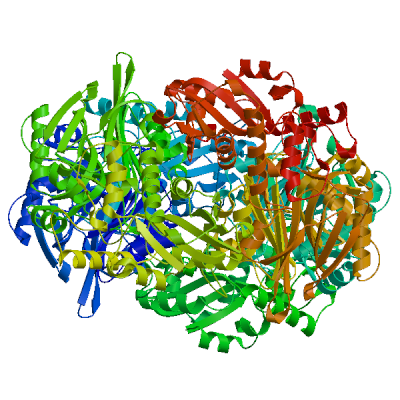 | PDB | ProMod3 Version 1.0.2. | homo-tetramer (matching prediction) |
1 x PIN: PIPERAZINE-N,N'-BIS(2-ETHANESULFONIC ACID); | 0.82 | -0.52 |
| 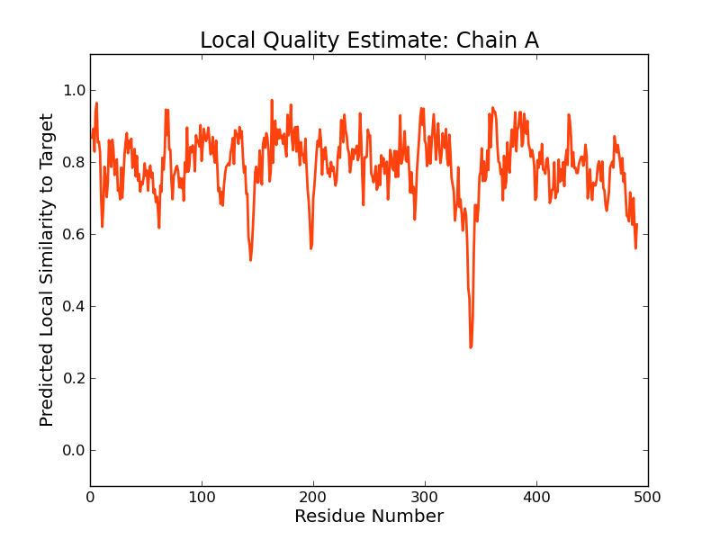 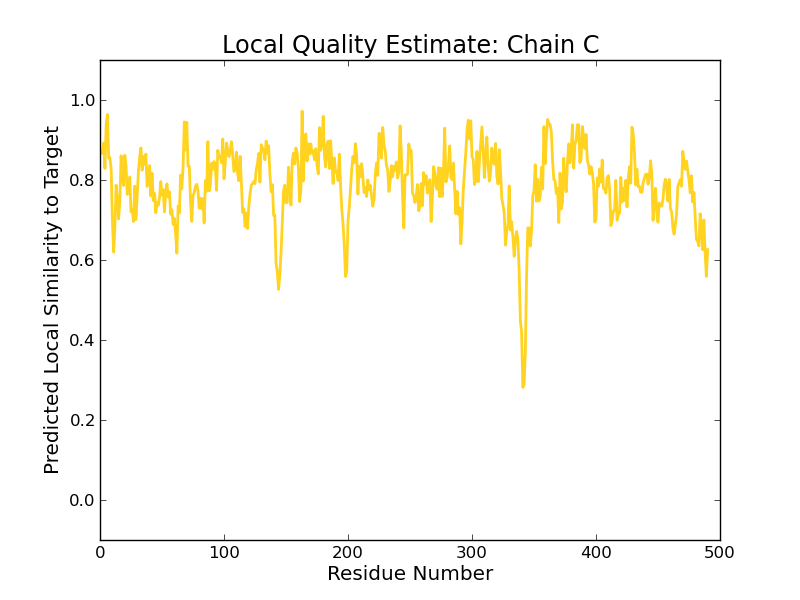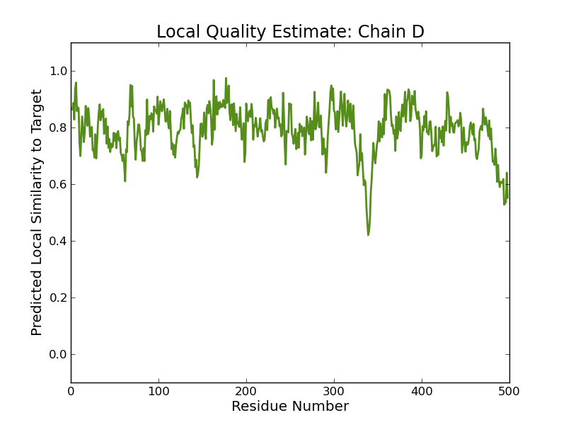 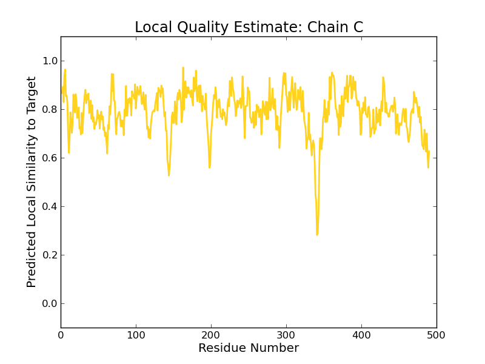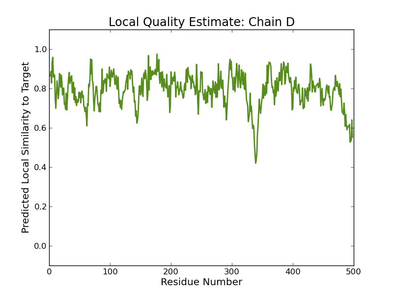 | 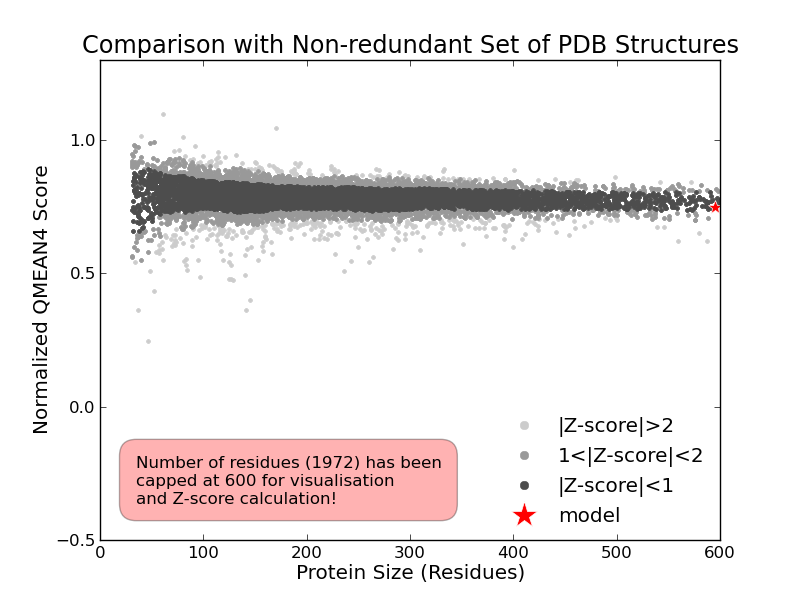 |
| Template | Seq Identity | Oligo-state | Found by | Method | Resolution | Seq Similarity | Range | Coverage | Description |
|---|---|---|---|---|---|---|---|---|---|
| 1ecg.1.B | 63.33 | homo-tetramer | BLAST | X-ray | 2.30Å | 0.48 | 2 - 498 | 0.99 | GLUTAMINE PHOSPHORIBOSYLPYROPHOSPHATE AMIDOTRANSFERASE |
| Ligand | Added to Model | Description | |
|---|---|---|---|
| PIN | ✓ | PIPERAZINE-N,N'-BIS(2-ETHANESULFONIC ACID) | |
| ONL | ✕ - Binding site not conserved. | 5-OXO-L-NORLEUCINE | |
| ONL | ✕ - Binding site not conserved. | 5-OXO-L-NORLEUCINE | |
| ONL | ✕ - Binding site not conserved. | 5-OXO-L-NORLEUCINE | |
| ONL | ✕ - Binding site not conserved. | 5-OXO-L-NORLEUCINE | |
| PIN | ✕ - Binding site not conserved. | PIPERAZINE-N,N'-BIS(2-ETHANESULFONIC ACID) | |
| PIN | ✕ - Binding site not conserved. | PIPERAZINE-N,N'-BIS(2-ETHANESULFONIC ACID) | |
| PIN | ✕ - Clashing with protein. | PIPERAZINE-N,N'-BIS(2-ETHANESULFONIC ACID) | |
| PIN | ✕ - Binding site not conserved. | PIPERAZINE-N,N'-BIS(2-ETHANESULFONIC ACID) | |
| PIN | ✕ - Binding site not conserved. | PIPERAZINE-N,N'-BIS(2-ETHANESULFONIC ACID) | |
| PIN | ✕ - Binding site not conserved. | PIPERAZINE-N,N'-BIS(2-ETHANESULFONIC ACID) | |
| PIN | ✕ - Binding site not conserved. | PIPERAZINE-N,N'-BIS(2-ETHANESULFONIC ACID) | |
| PIN | ✕ - Clashing with protein. | PIPERAZINE-N,N'-BIS(2-ETHANESULFONIC ACID) | |
| PIN | ✕ - Binding site not conserved. | PIPERAZINE-N,N'-BIS(2-ETHANESULFONIC ACID) | |
| PIN | ✕ - Binding site not conserved. | PIPERAZINE-N,N'-BIS(2-ETHANESULFONIC ACID) | |
| PIN | ✕ - Clashing with protein. | PIPERAZINE-N,N'-BIS(2-ETHANESULFONIC ACID) |
Target MCGIAAIVSHQTVNQELYDALTVLQHRGQDAAGIVTCEAGR-LHLRKENGLTRDVFTNAQMLRLKGNMGIAHVRYPTAGC
1ecg.1.B -CGIVGIAGVMPVNQSIYDALTVLQHRGQDAAGIITIDANNCFRLRKANGLVSDVFEARHMQRLQGNMGIGHVRYPTAGS
Target TSSAEAQPFYVNSPFGLTLAHNGNLTNTEELKKALFVEDQRHINTDSDSEVLLNVFAHELQSLGKLQLSVDDVFQAVSGV
1ecg.1.B SSASEAQPFYVNSPYGITLAHNGNLTNAHELRKKLFEEKRRHINTTSDSEILLNIFASELDNFRHYPLEADNIFAAIAAT
Target HRRCRGAYAVVIMIAGFGILGFRDPHGIRPIVFGERK-SEQGSEFMIASESVALDVLGFDLIRDIEPGEAVFIEESGVLH
1ecg.1.B NRLIRGAYACVAMIIGHGMVAFRDPNGIRPLVLGKRDIDENRTEYMVASESVALDTLGFDFLRDVAPGEAIYITEEGQLF
Target TKQCSDEVDHCPCIFEYVYFARPDSIIDRISVYKARLRMGEKLAKKVLRDWPDHDIDVVIPIPDTSRTAALQMANILGVK
1ecg.1.B TRQCADNPVSNPCLFEYVYFARPDSFIDKISVYSARVNMGTKLGEKIAREWEDLDIDVVIPIPETSCDIALEIARILGKP
Target YREGFIKNRYIGRTFIMPGQKMREKSVKQKLNAISLEFEGKNVLLVDDSIVRGTTSEQIIQMARDAGAKKVYFASAAPPV
1ecg.1.B YRQGFVKNRYVGRTFIMPGQQLRRKSVRRKLNANRAEFRDKNVLLVDDSIVRGTTSEQIIEMAREAGAKKVYLASAAPEI
Target RYPNVYGIDMPAAHELIAHDRTEDEVRVAIGADRVIYQELNDLIDAVRKGNQDIQHFDTSCFSKEYITGDIDDEYLERTE
1ecg.1.B RFPNVYGIDMPSATELIAHGREVDEIRQIIGADGLIFQDLNDLIDAVRAENPDIQQFECSVFNGVYVTKDVDQGYLDFLD
Target ALRNDGAQA-ERNSENFIIGMQNGD
1ecg.1.B TLRNDDAKAVQRQNEVENLEMHN--
Model #02 | File | Built with | Oligo-State | Ligands | GMQE | QMEAN |
|---|---|---|---|---|---|---|
| 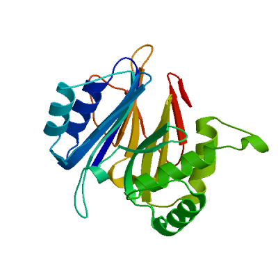 | PDB | ProMod3 Version 1.0.2. | MONOMER (matching prediction) | None | 0.29 | -2.60 |
| 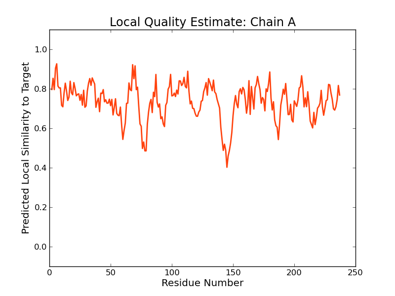 | 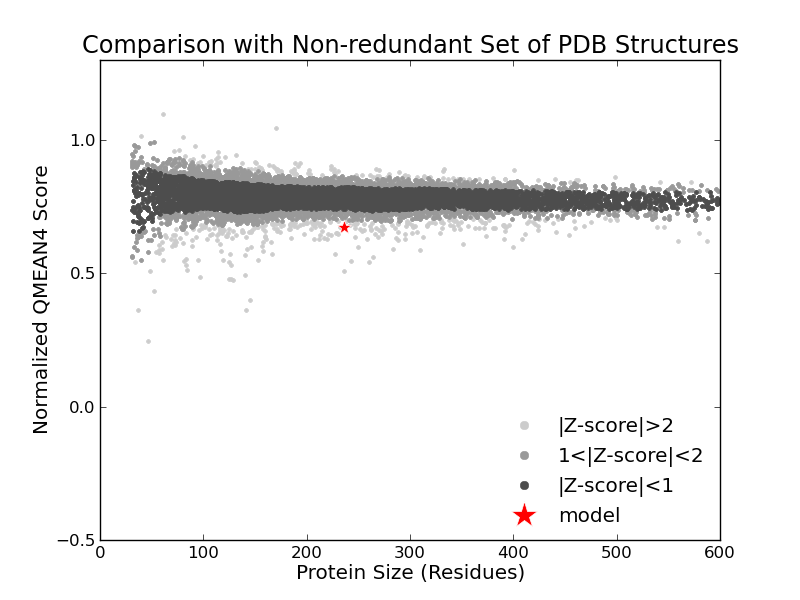 |
| Template | Seq Identity | Oligo-state | Found by | Method | Resolution | Seq Similarity | Range | Coverage | Description |
|---|---|---|---|---|---|---|---|---|---|
| 4amv.1.A | 29.82 | homo-dimer | HHblits | X-ray | 2.05Å | 0.34 | 2 - 237 | 0.43 | GLUCOSAMINE--FRUCTOSE-6-PHOSPHATE AMINOTRANSFERASE [ISOMER IZING] |
| Ligand | Added to Model | Description |
|---|---|---|
| F6R | ✕ - Binding site not conserved. | FRUCTOSE -6-PHOSPHATE |
| F6R | ✕ - Binding site not conserved. | FRUCTOSE -6-PHOSPHATE |
Target MCGIAAIVSHQTVNQELYDALTVLQHRGQDAAGIVTCE-AGRLHLRKENGLTRDVFTNAQMLRLKGNMGIAHVRYPTAGC
4amv.1.A MCGIVGAIAQRDVAEILLEGLRRLEYRGYDSAGLAVVDAEGHMTRLRRLGKVQMLAQAAEEHPLHGGTGIAHTRWATHGE
Target TSSAEAQPFYVNSPFGLTLAHNGNLTNTEELKKALFVEDQRHINTDSDSEVLLNVFAHELQSLGKLQLSVDDVFQAVSGV
4amv.1.A PSEVNAHPHVS---EHIVVVHNGIIENHEPLREELKARG-YTFVSETDTEVIAHLVNWELKQ-G------GTLREAVLRA
Target HRRCRGAYAVVIMIAG--FGILGFRDPHGIRPIVFGERKSEQGSEFMIASESVALDVLGFDLIRDIEPGEAVFIEESGVL
4amv.1.A IPQLRGAYGTVIMDSRHPDTLLAARSG---SPLVIGLGM----GENFIASDQLALLPVT-RRFIFLEEGDIAEITRRSVN
Target HTKQCSDEVDHCPCIFEYVYFARPDSIIDRISVYKARLRMGEKLAKKVLRDWPDHDIDVVIPIPDTSRTAALQMANILGV
4amv.1.A --------------------------------------------------------------------------------
Target KYREGFIKNRYIGRTFIMPGQKMREKSVKQKLNAISLEFEGKNVLLVDDSIVRGTTSEQIIQMARDAGAKKVYFASAAPP
4amv.1.A --------------------------------------------------------------------------------
Target VRYPNVYGIDMPAAHELIAHDRTEDEVRVAIGADRVIYQELNDLIDAVRKGNQDIQHFDTSCFSKEYITGDIDDEYLERT
4amv.1.A --------------------------------------------------------------------------------
Target EALRNDGAQAERNSENFIIGMQNGD
4amv.1.A -------------------------
Model #03 | File | Built with | Oligo-State | Ligands | GMQE | QMEAN |
|---|---|---|---|---|---|---|
| 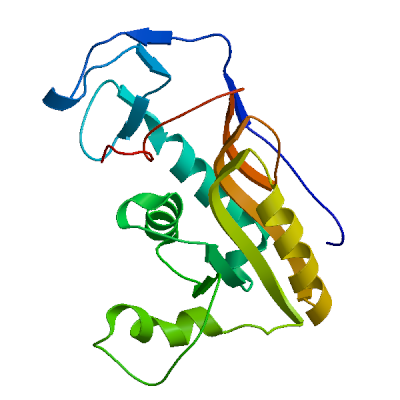 | PDB | ProMod3 Version 1.0.2. | MONOMER (matching prediction) | None | 0.16 | -4.99 |
| 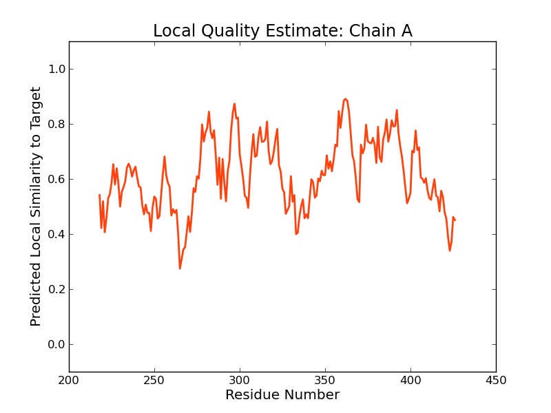 |  |
| Template | Seq Identity | Oligo-state | Found by | Method | Resolution | Seq Similarity | Range | Coverage | Description |
|---|---|---|---|---|---|---|---|---|---|
| 1qk3.1.B | 17.30 | homo-tetramer | HHblits | X-ray | 1.65Å | 0.28 | 0.37 | HYPOXANTHINE-GUANINE PHOSPHORIBOSYLTRANSFERASE |
| Ligand | Added to Model | Description |
|---|---|---|
| 5GP | ✕ - Binding site not conserved. | GUANOSINE-5'-MONOPHOSPHATE |
| 5GP | ✕ - Binding site not conserved. | GUANOSINE-5'-MONOPHOSPHATE |
| 5GP | ✕ - Binding site not conserved. | GUANOSINE-5'-MONOPHOSPHATE |
| 5GP | ✕ - Binding site not conserved. | GUANOSINE-5'-MONOPHOSPHATE |
Target MCGIAAIVSHQTVNQELYDALTVLQHRGQDAAGIVTCEAGRLHLRKENGLTRDVFTNAQMLRLKGNMGIAHVRYPTAGCT
1qk3.1.B --------------------------------------------------------------------------------
Target SSAEAQPFYVNSPFGLTLAHNGNLTNTEELKKALFVEDQRHINTDSDSEVLLNVFAHELQSLGKLQLSVDDVFQAVSGVH
1qk3.1.B --------------------------------------------------------------------------------
Target RRCRGAYAVVIMIAGFGILGFRDPHGIRPIVFGERKSEQGSEFMIASESVALDVLGFDLIRDIEPG----EAVFIEESGV
1qk3.1.B ---------------------------------------------------------KPIEDYGKGKGRIEPMYIPDNTF
Target LHTKQCSDEVDHCPCIFEYVYFARPDSIIDRISVYKARLRMGEKLAKKVLRDWPDHDIDVVIPIPDTSRTAALQMANILG
1qk3.1.B -YNADDFLVPPHCKPYIDKILLPG-----------GLVKDRVEKLAYDIHRTYF-GEELHIICILKGSRGFFNLLIDYLA
Target V------------KYREGFIK-NRYIGRTFIMPGQKMREKSVKQKLNA-ISLEFEGKNVLLVDDSIVRGTTSEQIIQMAR
1qk3.1.B TIQKYSGRESSVPPFFEHYVRLKSYQN-DNST-----G--QLT--VLSDDLSIFRDKHVLIVEDIVDTGFTLTEFGERLK
Target DAGAKKVYFASAAPP------VRYPNVYGIDMPAAHELIAHDRTEDEVRVAIGADRVIYQELNDLIDAVRKGNQDIQHFD
1qk3.1.B AVGPKSMRIATLVEKRTDRSNSLKGDFVGFSIED-VWIVGCCYDFNEMFR------------------------------
Target TSCFSKEYITGDIDDEYLERTEALRNDGAQAERNSENFIIGMQNGD
1qk3.1.B ----------------------------------------------
Model #04 | File | Built with | Oligo-State | Ligands | GMQE | QMEAN |
|---|---|---|---|---|---|---|
| 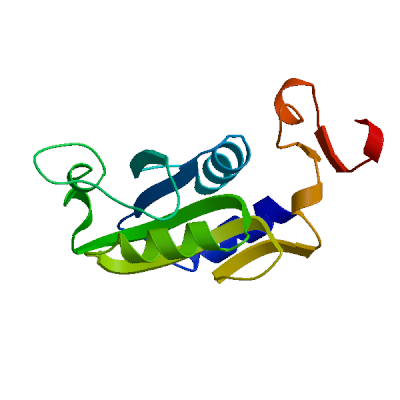 | PDB | ProMod3 Version 1.0.2. | MONOMER (matching prediction) | None | 0.14 | -3.38 |
| 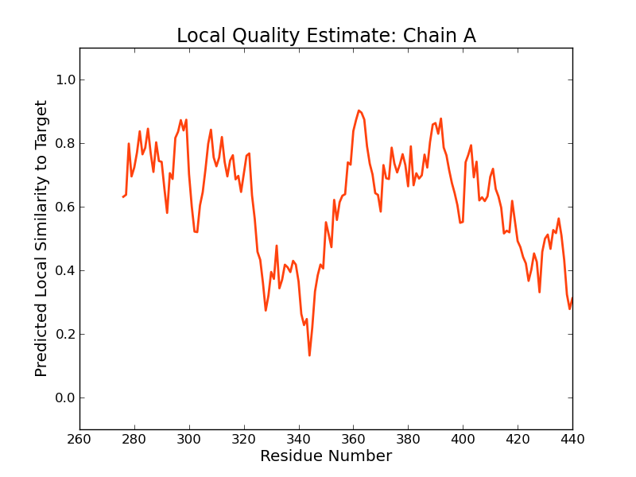 |
| Template | Seq Identity | Oligo-state | Found by | Method | Resolution | Seq Similarity | Range | Coverage | Description |
|---|---|---|---|---|---|---|---|---|---|
| 1hmp.1.A | 18.95 | homo-tetramer | HHblits | X-ray | 2.50Å | 0.29 | 276 - 440 | 0.30 | HYPOXANTHINE GUANINE PHOSPHORIBOSYL-TRANSFERASE |
| Ligand | Added to Model | Description |
|---|---|---|
| 5GP | ✕ - Binding site not conserved. | GUANOSINE-5'-MONOPHOSPHATE |
| 5GP | ✕ - Binding site not conserved. | GUANOSINE-5'-MONOPHOSPHATE |
| 5GP | ✕ - Binding site not conserved. | GUANOSINE-5'-MONOPHOSPHATE |
| 5GP | ✕ - Binding site not conserved. | GUANOSINE-5'-MONOPHOSPHATE |
Target MCGIAAIVSHQTVNQELYDALTVLQHRGQDAAGIVTCEAGRLHLRKENGLTRDVFTNAQMLRLKGNMGIAHVRYPTAGCT
1hmp.1.A --------------------------------------------------------------------------------
Target SSAEAQPFYVNSPFGLTLAHNGNLTNTEELKKALFVEDQRHINTDSDSEVLLNVFAHELQSLGKLQLSVDDVFQAVSGVH
1hmp.1.A --------------------------------------------------------------------------------
Target RRCRGAYAVVIMIAGFGILGFRDPHGIRPIVFGERKSEQGSEFMIASESVALDVLGFDLIRDIEPGEAVFIEESGVLHTK
1hmp.1.A --------------------------------------------------------------------------------
Target QCSDEVDHCPCIFEYVYFARPDSIIDRISVYKARLRMGEKLAKKVLRDWPDHDIDVVIPIPDTSRTAALQMANILG----
1hmp.1.A -----------------------------------DRTERLARDVMKEMG-GHHIVALCVLKGGYKFFADLLDYIKALNR
Target -----VKYREGFIK-NRYIGRTFIMPGQKMREKSVKQKLNAISLEFEGKNVLLVDDSIVRGTTSEQIIQMARDAGAKKVY
1hmp.1.A NSDRSIPMTVDFIRLKSYCND---QSTG-----DIKVIGGDDLSTLTGKNVLIVEDIIDTGKTMQTLLSLVRQYNPKMVK
Target FASAA--PPV----RYPNVYGIDMPAAHELIAHDRTEDEVRVAIGADRVIYQELNDLIDAVRKGNQDIQHFDTSCFSKEY
1hmp.1.A VASLLVKRTPRSVGYKPDFVGFEIPDK-FVVGYALDYNEYFR--DLNHVCVISETG------------------------
Target ITGDIDDEYLERTEALRNDGAQAERNSENFIIGMQNGD
1hmp.1.A --------------------------------------
Materials and Methods
Template Search
Template search with Blast and HHBlits has been performed against the SWISS-MODEL template library (SMTL, last update: 2017-07-06, last included PDB release: 2017-06-30).
The target sequence was searched with BLAST (Altschul et al., 1997) against the primary amino acid sequence contained in the SMTL. A total of 20 templates were found.
An initial HHblits profile has been built using the procedure outlined in (Remmert, et al., 2011), followed by 1 iteration of HHblits against NR20. The obtained profile has then be searched against all profiles of the SMTL. A total of 381 templates were found.
Template Selection
For each identified template, the template's quality has been predicted from features of the target-template alignment. The templates with the highest quality have then been selected for model building.
Model Building
Models are built based on the target-template alignment using ProMod3. Coordinates which are conserved between the target and the template are copied from the template to the model. Insertions and deletions are remodelled using a fragment library. Side chains are then rebuilt. Finally, the geometry of the resulting model is regularized by using a force field. In case loop modelling with ProMod3 fails, an alternative model is built with PROMOD-II (Guex, et al., 1997).
Model Quality Estimation
The global and per-residue model quality has been assessed using the QMEAN scoring function (Benkert, et al., 2011) . For improved performance, weights of the individual QMEAN terms have been trained specifically for SWISS-MODEL.
Ligand Modelling
Ligands present in the template structure are transferred by homology to the model when the following criteria are met (Gallo -Casserino, to be published): (a) The ligands are annotated as biologically relevant in the template library, (b) the ligand is in contact with the model, (c) the ligand is not clashing with the protein, (d) the residues in contact with the ligand are conserved between the target and the template. If any of these four criteria is not satisfied, a certain ligand will not be included in the model. The model summary includes information on why and which ligand has not been included.
Oligomeric State Conservation
Homo-oligomeric structure of the target protein is predicted based on the analysis of pairwise interfaces of the identified template structures. For each relevant interface between polypeptide chains (interfaces with more than 10 residue-residue interactions), the QscoreOligomer (Mariani et al., 2011) is predicted from features such as similarity to target and frequency of observing this interface in the identified templates (Kiefer, Bertoni, Biasini, to be published). The prediction is performed with a random forest regressor using these features as input parameters to predict the probability of conservation for each interface. The QscoreOligomer of the whole complex is then calculated as the weight-averaged QscoreOligomer of the interfaces. The oligomeric state of the target is predicted to be the same as in the template when QscoreOligomer is predicted to be higher or equal to 0.5.
References
Altschul, S.F., Madden, T.L., Schaffer, A.A., Zhang, J., Zhang, Z., Miller, W. and Lipman, D.J. (1997) Gapped BLAST and PSI-BLAST: a new generation of protein database search programs. Nucleic Acids Res, 25, 3389-3402.
Remmert, M., Biegert, A., Hauser, A. and Soding, J. (2012) HHblits: lightning-fast iterative protein sequence searching by HMM-HMM alignment. Nat Methods, 9, 173-175.
Guex, N. and Peitsch, M.C. (1997) SWISS-MODEL and the Swiss-PdbViewer: an environment for comparative protein modeling. Electrophoresis, 18, 2714-2723.
Sali, A. and Blundell, T.L. (1993) Comparative protein modelling by satisfaction of spatial restraints. J Mol Biol, 234, 779-815.
Benkert, P., Biasini, M. and Schwede, T. (2011) Toward the estimation of the absolute quality of individual protein structure models. Bioinformatics, 27, 343-350.
Mariani, V., Kiefer, F., Schmidt, T., Haas, J. and Schwede, T. (2011) Assessment of template based protein structure predictions in CASP9. Proteins, 79 Suppl 10, 37-58.
Table T1:
Primary amino acid sequence for which templates were searched and models were built.
NGNLTNTEELKKALFVEDQRHINTDSDSEVLLNVFAHELQSLGKLQLSVDDVFQAVSGVHRRCRGAYAVVIMIAGFGILGFRDPHGIRPIVFGERKSEQG
SEFMIASESVALDVLGFDLIRDIEPGEAVFIEESGVLHTKQCSDEVDHCPCIFEYVYFARPDSIIDRISVYKARLRMGEKLAKKVLRDWPDHDIDVVIPI
PDTSRTAALQMANILGVKYREGFIKNRYIGRTFIMPGQKMREKSVKQKLNAISLEFEGKNVLLVDDSIVRGTTSEQIIQMARDAGAKKVYFASAAPPVRY
PNVYGIDMPAAHELIAHDRTEDEVRVAIGADRVIYQELNDLIDAVRKGNQDIQHFDTSCFSKEYITGDIDDEYLERTEALRNDGAQAERNSENFIIGMQN
GD
Table T2:
| Template | Seq Identity | Oligo-state | Found by | Method | Resolution | Seq Similarity | Coverage | Description |
|---|---|---|---|---|---|---|---|---|
| 1ecg.1.A | 63.33 | homo-tetramer | BLAST | X-ray | 2.30Å | 0.48 | 0.99 | GLUTAMINE PHOSPHORIBOSYLPYROPHOSPHATE AMIDOTRANSFERASE |
| 1ecg.1.B | 63.33 | homo-tetramer | BLAST | X-ray | 2.30Å | 0.48 | 0.99 | GLUTAMINE PHOSPHORIBOSYLPYROPHOSPHATE AMIDOTRANSFERASE |
| 1ecc.1.A | 63.33 | homo-tetramer | BLAST | X-ray | 2.40Å | 0.48 | 0.99 | GLUTAMINE PHOSPHORIBOSYLPYROPHOSPHATE AMIDOTRANSFERASE |
| 1ecb.3.C | 63.33 | homo-tetramer | BLAST | X-ray | 2.70Å | 0.48 | 0.99 | GLUTAMINE PHOSPHORIBOSYLPYROPHOSPHATE AMIDOTRANSFERASE |
| 1ecg.1.A | 62.80 | homo-tetramer | HHblits | X-ray | 2.30Å | 0.48 | 1.00 | GLUTAMINE PHOSPHORIBOSYLPYROPHOSPHATE AMIDOTRANSFERASE |
| 1ecg.1.B | 62.80 | homo-tetramer | HHblits | X-ray | 2.30Å | 0.48 | 1.00 | GLUTAMINE PHOSPHORIBOSYLPYROPHOSPHATE AMIDOTRANSFERASE |
| 1ecc.1.A | 62.80 | homo-tetramer | HHblits | X-ray | 2.40Å | 0.48 | 1.00 | GLUTAMINE PHOSPHORIBOSYLPYROPHOSPHATE AMIDOTRANSFERASE |
| 1ecb.3.C | 62.80 | homo-tetramer | HHblits | X-ray | 2.70Å | 0.48 | 1.00 | GLUTAMINE PHOSPHORIBOSYLPYROPHOSPHATE AMIDOTRANSFERASE |
| 1gph.1.A | 41.91 | homo-tetramer | BLAST | X-ray | 3.00Å | 0.40 | 0.90 | GLUTAMINE PHOSPHORIBOSYL-PYROPHOSPHATE AMIDOTRANSFERASE |
| 1ao0.1.A | 41.69 | homo-tetramer | BLAST | X-ray | 2.80Å | 0.40 | 0.90 | GLUTAMINE PHOSPHORIBOSYLPYROPHOSPHATE AMIDOTRANSFERASE |
| 1gph.1.A | 39.12 | homo-tetramer | HHblits | X-ray | 3.00Å | 0.39 | 0.91 | GLUTAMINE PHOSPHORIBOSYL-PYROPHOSPHATE AMIDOTRANSFERASE |
| 1ao0.1.A | 38.90 | homo-tetramer | HHblits | X-ray | 2.80Å | 0.39 | 0.91 | GLUTAMINE PHOSPHORIBOSYLPYROPHOSPHATE AMIDOTRANSFERASE |
| 4amv.1.A | 29.82 | homo-dimer | HHblits | X-ray | 2.05Å | 0.34 | 0.43 | GLUCOSAMINE--FRUCTOSE-6-PHOSPHATE AMINOTRANSFERASE [ISOMER IZING] |
| 1xff.1.A | 29.49 | homo-dimer | HHblits | X-ray | 1.80Å | 0.34 | 0.43 | Glucosamine--fructose-6-phosphate aminotransferase [isomerizing] |
| 1xff.1.B | 29.49 | homo-dimer | HHblits | X-ray | 1.80Å | 0.34 | 0.43 | Glucosamine--fructose-6-phosphate aminotransferase [isomerizing] |
| 1jxa.1.A | 29.49 | homo-dimer | HHblits | X-ray | 3.10Å | 0.34 | 0.43 | glucosamine 6-phosphate synthase |
| 1jxa.2.B | 29.49 | homo-dimer | HHblits | X-ray | 3.10Å | 0.34 | 0.43 | glucosamine 6-phosphate synthase |
| 1jxa.2.A | 29.49 | homo-dimer | HHblits | X-ray | 3.10Å | 0.34 | 0.43 | glucosamine 6-phosphate synthase |
| 2j6h.1.A | 29.49 | homo-dimer | HHblits | X-ray | 2.35Å | 0.34 | 0.43 | GLUCOSAMINE-FRUCTOSE-6-PHOSPHATE AMINOTRANSFERASE |
| 3ooj.1.E | 29.03 | homo-octamer | HHblits | X-ray | 2.50Å | 0.33 | 0.43 | Glucosamine/fructose-6-phosphate aminotransferase, isomerizing |
| 3ooj.1.B | 29.03 | homo-octamer | HHblits | X-ray | 2.50Å | 0.33 | 0.43 | Glucosamine/fructose-6-phosphate aminotransferase, isomerizing |
| 3ooj.1.D | 29.03 | homo-octamer | HHblits | X-ray | 2.50Å | 0.33 | 0.43 | Glucosamine/fructose-6-phosphate aminotransferase, isomerizing |
| 3ooj.1.A | 29.03 | homo-octamer | HHblits | X-ray | 2.50Å | 0.33 | 0.43 | Glucosamine/fructose-6-phosphate aminotransferase, isomerizing |
| 3ooj.1.F | 29.03 | homo-octamer | HHblits | X-ray | 2.50Å | 0.33 | 0.43 | Glucosamine/fructose-6-phosphate aminotransferase, isomerizing |
| 3ooj.1.G | 29.03 | homo-octamer | HHblits | X-ray | 2.50Å | 0.33 | 0.43 | Glucosamine/fructose-6-phosphate aminotransferase, isomerizing |
| 1te5.1.A | 20.27 | homo-dimer | HHblits | X-ray | 2.00Å | 0.29 | 0.44 | conserved hypothetical protein |
| 1te5.1.B | 20.27 | homo-dimer | HHblits | X-ray | 2.00Å | 0.29 | 0.44 | conserved hypothetical protein |
| 3mdn.1.A | 18.22 | homo-tetramer | HHblits | X-ray | 2.09Å | 0.29 | 0.43 | Glutamine aminotransferase class-II domain protein |
| 1ea0.1.A | 22.12 | monomer | HHblits | X-ray | 3.00Å | 0.30 | 0.41 | GLUTAMATE SYNTHASE [NADPH] LARGE CHAIN |
| 2vdc.1.A | 22.12 | hetero-oligomer | HHblits | EM | 9.50Å | 0.30 | 0.41 | GLUTAMATE SYNTHASE [NADPH] LARGE CHAIN |
| 1ofd.1.A | 18.27 | monomer | HHblits | X-ray | 2.00Å | 0.30 | 0.41 | FERREDOXIN-DEPENDENT GLUTAMATE SYNTHASE 2 |
| 1llw.1.A | 18.27 | monomer | HHblits | X-ray | 2.70Å | 0.30 | 0.41 | Ferredoxin-dependent glutamate synthase |
| 4zfk.1.A | 17.82 | homo-tetramer | HHblits | X-ray | 1.82Å | 0.27 | 0.40 | Amidohydrolase EgtC |
| 4zfj.1.A | 17.50 | homo-tetramer | HHblits | X-ray | 1.75Å | 0.27 | 0.40 | Amidohydrolase EgtC |
| 4zfj.3.A | 17.50 | homo-tetramer | HHblits | X-ray | 1.75Å | 0.27 | 0.40 | Amidohydrolase EgtC |
| 4zfj.3.B | 17.50 | homo-tetramer | HHblits | X-ray | 1.75Å | 0.27 | 0.40 | Amidohydrolase EgtC |
| 4zfl.1.A | 17.59 | homo-tetramer | HHblits | X-ray | 1.70Å | 0.27 | 0.40 | Amidohydrolase EgtC |
| 1ct9.1.A | 25.14 | homo-dimer | HHblits | X-ray | 2.00Å | 0.32 | 0.36 | ASPARAGINE SYNTHETASE B |
| 1fsg.1.A | 17.30 | homo-tetramer | HHblits | X-ray | 1.05Å | 0.28 | 0.37 | HYPOXANTHINE-GUANINE PHOSPHORIBOSYLTRANSFERASE |
| 1qk3.1.A | 17.30 | homo-tetramer | HHblits | X-ray | 1.65Å | 0.28 | 0.37 | HYPOXANTHINE-GUANINE PHOSPHORIBOSYLTRANSFERASE |
| 1qk3.1.B | 17.30 | homo-tetramer | HHblits | X-ray | 1.65Å | 0.28 | 0.37 | HYPOXANTHINE-GUANINE PHOSPHORIBOSYLTRANSFERASE |
| 1qk3.1.C | 17.30 | homo-tetramer | HHblits | X-ray | 1.65Å | 0.28 | 0.37 | HYPOXANTHINE-GUANINE PHOSPHORIBOSYLTRANSFERASE |
| 1qk3.1.D | 17.30 | homo-tetramer | HHblits | X-ray | 1.65Å | 0.28 | 0.37 | HYPOXANTHINE-GUANINE PHOSPHORIBOSYLTRANSFERASE |
| 1qk4.1.A | 17.30 | homo-tetramer | HHblits | X-ray | 1.90Å | 0.28 | 0.37 | HYPOXANTHINE-GUANINE PHOSPHORIBOSYLTRANSFERASE |
| 1qk4.1.C | 17.30 | homo-tetramer | HHblits | X-ray | 1.90Å | 0.28 | 0.37 | HYPOXANTHINE-GUANINE PHOSPHORIBOSYLTRANSFERASE |
| 1qk5.1.A | 17.93 | homo-tetramer | HHblits | X-ray | 1.60Å | 0.28 | 0.37 | HYPOXANTHINE-GUANINE PHOSPHORIBOSYLTRANSFERASE |
| 1dbr.1.A | 17.39 | homo-tetramer | HHblits | X-ray | 2.40Å | 0.28 | 0.37 | HYPOXANTHINE GUANINE XANTHINE PHOSPHORIBOSYLTRANSFERASE |
| 1dbr.1.B | 17.39 | homo-tetramer | HHblits | X-ray | 2.40Å | 0.28 | 0.37 | HYPOXANTHINE GUANINE XANTHINE PHOSPHORIBOSYLTRANSFERASE |
| 1dbr.1.C | 17.39 | homo-tetramer | HHblits | X-ray | 2.40Å | 0.28 | 0.37 | HYPOXANTHINE GUANINE XANTHINE PHOSPHORIBOSYLTRANSFERASE |
| 1dbr.1.D | 17.39 | homo-tetramer | HHblits | X-ray | 2.40Å | 0.28 | 0.37 | HYPOXANTHINE GUANINE XANTHINE PHOSPHORIBOSYLTRANSFERASE |
| 4amv.1.A | 32.30 | homo-dimer | BLAST | X-ray | 2.05Å | 0.36 | 0.32 | GLUCOSAMINE--FRUCTOSE-6-PHOSPHATE AMINOTRANSFERASE [ISOMER IZING] |
| 1xff.1.A | 31.88 | homo-dimer | BLAST | X-ray | 1.80Å | 0.36 | 0.32 | Glucosamine--fructose-6-phosphate aminotransferase [isomerizing] |
| 1xff.1.B | 31.88 | homo-dimer | BLAST | X-ray | 1.80Å | 0.36 | 0.32 | Glucosamine--fructose-6-phosphate aminotransferase [isomerizing] |
| 1jxa.1.A | 31.88 | homo-dimer | BLAST | X-ray | 3.10Å | 0.36 | 0.32 | glucosamine 6-phosphate synthase |
| 1jxa.2.B | 31.88 | homo-dimer | BLAST | X-ray | 3.10Å | 0.36 | 0.32 | glucosamine 6-phosphate synthase |
| 1jxa.2.A | 31.88 | homo-dimer | BLAST | X-ray | 3.10Å | 0.36 | 0.32 | glucosamine 6-phosphate synthase |
| 2j6h.1.A | 31.88 | homo-dimer | BLAST | X-ray | 2.35Å | 0.36 | 0.32 | GLUCOSAMINE-FRUCTOSE-6-PHOSPHATE AMINOTRANSFERASE |
| 3ooj.1.E | 31.25 | homo-octamer | BLAST | X-ray | 2.50Å | 0.36 | 0.32 | Glucosamine/fructose-6-phosphate aminotransferase, isomerizing |
| 3ooj.1.B | 31.25 | homo-octamer | BLAST | X-ray | 2.50Å | 0.36 | 0.32 | Glucosamine/fructose-6-phosphate aminotransferase, isomerizing |
| 3ooj.1.D | 31.25 | homo-octamer | BLAST | X-ray | 2.50Å | 0.36 | 0.32 | Glucosamine/fructose-6-phosphate aminotransferase, isomerizing |
| 3ooj.1.A | 31.25 | homo-octamer | BLAST | X-ray | 2.50Å | 0.36 | 0.32 | Glucosamine/fructose-6-phosphate aminotransferase, isomerizing |
| 3ooj.1.F | 31.25 | homo-octamer | BLAST | X-ray | 2.50Å | 0.36 | 0.32 | Glucosamine/fructose-6-phosphate aminotransferase, isomerizing |
| 3ooj.1.G | 31.25 | homo-octamer | BLAST | X-ray | 2.50Å | 0.36 | 0.32 | Glucosamine/fructose-6-phosphate aminotransferase, isomerizing |
| 3dah.1.A | 17.61 | homo-trimer | HHblits | X-ray | 2.30Å | 0.28 | 0.35 | Ribose-phosphate pyrophosphokinase |
| 3dah.1.C | 17.61 | homo-trimer | HHblits | X-ray | 2.30Å | 0.28 | 0.35 | Ribose-phosphate pyrophosphokinase |
| 4s2u.1.A | 17.51 | homo-hexamer | HHblits | X-ray | 2.71Å | 0.27 | 0.35 | Ribose-phosphate pyrophosphokinase |
| 2c4k.1.A | 14.02 | monomer | HHblits | X-ray | 2.65Å | 0.28 | 0.33 | PHOSPHORIBOSYL PYROPHOSPHATE SYNTHETASE-ASSOCIATED PROTEIN 1 |
| 2ji4.1.A | 15.85 | homo-hexamer | HHblits | X-ray | 2.55Å | 0.28 | 0.33 | PHOSPHORIBOSYL PYROPHOSPHATE SYNTHETASE-ASSOCIATED PROTEIN 2 |
| 5vn4.1.A | 12.94 | homo-dimer | HHblits | X-ray | 1.35Å | 0.25 | 0.34 | Adenine phosphoribosyltransferase, putative |
| 4trc.1.A | 19.38 | homo-dimer | HHblits | X-ray | 2.40Å | 0.30 | 0.32 | Purine phosphoribosyltransferase (GpT-1) |
| 4ts7.1.B | 19.38 | homo-dimer | HHblits | X-ray | 2.80Å | 0.30 | 0.32 | Purine phosphoribosyltransferase (GpT-1) |
| 4trb.1.A | 19.38 | homo-dimer | HHblits | X-ray | 2.40Å | 0.30 | 0.32 | Purine phosphoribosyltransferase (GpT-1) |
| 4ohc.1.A | 18.63 | homo-dimer | HHblits | X-ray | 1.85Å | 0.29 | 0.32 | Orotate phosphoribosyltransferase |
| 1mzv.1.A | 11.38 | homo-dimer | HHblits | X-ray | 2.20Å | 0.25 | 0.33 | Adenine Phosphoribosyltransferase |
| 3m3h.1.A | 13.38 | homo-dimer | HHblits | X-ray | 1.75Å | 0.29 | 0.31 | Orotate phosphoribosyltransferase |
| 4rv4.1.B | 13.38 | homo-dimer | HHblits | X-ray | 2.65Å | 0.29 | 0.31 | Orotate phosphoribosyltransferase |
| 2aee.1.A | 12.58 | homo-dimer | HHblits | X-ray | 1.95Å | 0.28 | 0.32 | Orotate phosphoribosyltransferase |
| 2aee.1.B | 12.58 | homo-dimer | HHblits | X-ray | 1.95Å | 0.28 | 0.32 | Orotate phosphoribosyltransferase |
| 3acb.1.A | 12.50 | homo-dimer | HHblits | X-ray | 2.06Å | 0.27 | 0.32 | Hypoxanthine-guanine phosphoribosyltransferase |
| 3dez.1.A | 12.03 | homo-dimer | HHblits | X-ray | 2.40Å | 0.28 | 0.31 | Orotate phosphoribosyltransferase |
| 1mb9.2.A | 17.09 | monomer | HHblits | X-ray | 2.11Å | 0.27 | 0.31 | BETA-LACTAM SYNTHETASE |
| 1mb9.1.A | 17.09 | monomer | HHblits | X-ray | 2.11Å | 0.27 | 0.31 | BETA-LACTAM SYNTHETASE |
| 1mbz.1.A | 17.09 | monomer | HHblits | X-ray | 2.47Å | 0.27 | 0.31 | BETA-LACTAM SYNTHETASE |
| 1m1z.1.A | 17.09 | monomer | HHblits | X-ray | 1.95Å | 0.27 | 0.31 | BETA-LACTAM SYNTHETASE |
| 4kn6.1.A | 18.95 | monomer | HHblits | X-ray | 2.73Å | 0.30 | 0.30 | Hypoxanthine-guanine phosphoribosyltransferase |
| 4ran.1.D | 18.95 | homo-tetramer | HHblits | X-ray | 2.55Å | 0.29 | 0.30 | Hypoxanthine-guanine phosphoribosyltransferase |
| 1z7g.1.A | 18.95 | homo-tetramer | HHblits | X-ray | 1.90Å | 0.29 | 0.30 | Hypoxanthine-guanine phosphoribosyltransferase |
| 1z7g.1.B | 18.95 | homo-tetramer | HHblits | X-ray | 1.90Å | 0.29 | 0.30 | Hypoxanthine-guanine phosphoribosyltransferase |
| 1hmp.1.A | 18.95 | homo-tetramer | HHblits | X-ray | 2.50Å | 0.29 | 0.30 | HYPOXANTHINE GUANINE PHOSPHORIBOSYL-TRANSFERASE |
| 1hmp.1.B | 18.95 | homo-tetramer | HHblits | X-ray | 2.50Å | 0.29 | 0.30 | HYPOXANTHINE GUANINE PHOSPHORIBOSYL-TRANSFERASE |
| 3gep.1.A | 18.95 | homo-tetramer | HHblits | X-ray | 2.60Å | 0.29 | 0.30 | Hypoxanthine-guanine phosphoribosyltransferase |
| 1bzy.1.A | 18.95 | homo-tetramer | HHblits | X-ray | 2.00Å | 0.29 | 0.30 | HYPOXANTHINE-GUANINE PHOSPHORIBOSYLTRANSFERASE |
| 3gep.1.B | 18.95 | homo-tetramer | HHblits | X-ray | 2.60Å | 0.29 | 0.30 | Hypoxanthine-guanine phosphoribosyltransferase |
| 4rad.1.A | 18.95 | homo-tetramer | HHblits | X-ray | 2.00Å | 0.29 | 0.30 | Hypoxanthine-guanine phosphoribosyltransferase |
| 4rad.1.B | 18.95 | homo-tetramer | HHblits | X-ray | 2.00Å | 0.29 | 0.30 | Hypoxanthine-guanine phosphoribosyltransferase |
| 4rad.1.C | 18.95 | homo-tetramer | HHblits | X-ray | 2.00Å | 0.29 | 0.30 | Hypoxanthine-guanine phosphoribosyltransferase |
| 4rad.1.D | 18.95 | homo-tetramer | HHblits | X-ray | 2.00Å | 0.29 | 0.30 | Hypoxanthine-guanine phosphoribosyltransferase |
| 4rad.2.C | 18.95 | homo-tetramer | HHblits | X-ray | 2.00Å | 0.29 | 0.30 | Hypoxanthine-guanine phosphoribosyltransferase |
| 4rad.2.B | 18.95 | homo-tetramer | HHblits | X-ray | 2.00Å | 0.29 | 0.30 | Hypoxanthine-guanine phosphoribosyltransferase |
| 4rac.1.C | 18.95 | homo-tetramer | HHblits | X-ray | 2.05Å | 0.29 | 0.30 | Hypoxanthine-guanine phosphoribosyltransferase |
| 4rac.1.B | 18.95 | homo-tetramer | HHblits | X-ray | 2.05Å | 0.29 | 0.30 | Hypoxanthine-guanine phosphoribosyltransferase |
| 2jbh.1.A | 18.42 | homo-tetramer | HHblits | X-ray | 1.70Å | 0.30 | 0.30 | PHOSPHORIBOSYLTRANSFERASE DOMAIN-CONTAINING PROTEIN 1 |
| 4ijq.1.A | 19.08 | homo-tetramer | HHblits | X-ray | 2.00Å | 0.29 | 0.30 | Hypoxanthine-guanine phosphoribosyltransferase |
| 4ijq.1.C | 19.08 | homo-tetramer | HHblits | X-ray | 2.00Å | 0.29 | 0.30 | Hypoxanthine-guanine phosphoribosyltransferase |
| 5hia.1.A | 19.08 | homo-tetramer | HHblits | X-ray | 1.77Å | 0.29 | 0.30 | Hypoxanthine-guanine phosphoribosyltransferase |
| 5hia.1.C | 19.08 | homo-tetramer | HHblits | X-ray | 1.77Å | 0.29 | 0.30 | Hypoxanthine-guanine phosphoribosyltransferase |
| 5bsk.1.A | 19.08 | homo-tetramer | HHblits | X-ray | 2.61Å | 0.29 | 0.30 | Hypoxanthine-guanine phosphoribosyltransferase |
| 5brn.1.D | 19.08 | homo-tetramer | HHblits | X-ray | 2.30Å | 0.29 | 0.30 | Hypoxanthine-guanine phosphoribosyltransferase |
| 5brn.1.B | 19.08 | homo-tetramer | HHblits | X-ray | 2.30Å | 0.29 | 0.30 | Hypoxanthine-guanine phosphoribosyltransferase |
| 5brn.1.C | 19.08 | homo-tetramer | HHblits | X-ray | 2.30Å | 0.29 | 0.30 | Hypoxanthine-guanine phosphoribosyltransferase |
| 2jkz.1.A | 16.13 | homo-dimer | HHblits | X-ray | 3.45Å | 0.28 | 0.31 | HYPOXANTHINE-GUANINE PHOSPHORIBOSYLTRANSFERASE |
| 1d6n.1.A | 19.21 | homo-dimer | HHblits | X-ray | 2.70Å | 0.30 | 0.30 | PROTEIN (HYPOXANTHINE-GUANINE PHOSPHORIBOSYLTRANSFERASE) |
| 1d6n.1.B | 19.21 | homo-dimer | HHblits | X-ray | 2.70Å | 0.30 | 0.30 | PROTEIN (HYPOXANTHINE-GUANINE PHOSPHORIBOSYLTRANSFERASE) |
| 1cjb.1.A | 16.23 | homo-tetramer | HHblits | X-ray | 2.00Å | 0.28 | 0.31 | PROTEIN (HYPOXANTHINE-GUANINE PHOSPHORIBOSYLTRANSFERASE) |
| 3ozg.1.A | 17.76 | homo-tetramer | HHblits | X-ray | 1.99Å | 0.29 | 0.30 | Hypoxanthine-guanine-xanthine phosphoribosyltransferase |
| 2vfa.1.A | 19.21 | homo-dimer | HHblits | X-ray | 2.80Å | 0.29 | 0.30 | HYPOXANTHINE-GUANINE-XANTHINE PHOSPHORIBOSYLTRANSFERASE, HYPOXANTHINE-GUANINE PHOSPHORIBOSYLTRANSFERASE |
| 2vfa.1.B | 19.21 | homo-dimer | HHblits | X-ray | 2.80Å | 0.29 | 0.30 | HYPOXANTHINE-GUANINE-XANTHINE PHOSPHORIBOSYLTRANSFERASE, HYPOXANTHINE-GUANINE PHOSPHORIBOSYLTRANSFERASE |
| 2xbu.1.A | 15.48 | homo-dimer | HHblits | X-ray | 1.80Å | 0.27 | 0.31 | HYPOXANTHINE-GUANINE PHOSPHORIBOSYLTRANSFERASE |
| 5ipf.1.A | 15.03 | homo-tetramer | HHblits | X-ray | 2.80Å | 0.28 | 0.30 | Hypoxanthine-guanine phosphoribosyltransferase (HGPRT) |
| 5hhu.1.A | 16.45 | homo-tetramer | HHblits | X-ray | 3.05Å | 0.28 | 0.30 | Hypoxanthine-guanine-xanthine phosphoribosyltransferase |
| 5hhu.2.A | 16.45 | homo-tetramer | HHblits | X-ray | 3.05Å | 0.28 | 0.30 | Hypoxanthine-guanine-xanthine phosphoribosyltransferase |
| 5mp7.1.A | 20.95 | homo-hexamer | HHblits | X-ray | 2.40Å | 0.29 | 0.29 | Ribose-phosphate pyrophosphokinase |
| 5esx.1.A | 19.18 | homo-dimer | HHblits | X-ray | 2.71Å | 0.29 | 0.29 | Purine/pyrimidine phosphoribosyltransferase |
| 4wn3.1.A | 16.22 | homo-dimer | HHblits | X-ray | 1.80Å | 0.28 | 0.29 | Orotate phosphoribosyltransferase 1 |
| 4wml.1.A | 16.22 | homo-dimer | HHblits | X-ray | 1.73Å | 0.28 | 0.29 | Orotate phosphoribosyltransferase 1 |
| 2prz.1.A | 15.54 | homo-dimer | HHblits | X-ray | 1.89Å | 0.28 | 0.29 | Orotate phosphoribosyltransferase 1 |
| 2ps1.1.B | 15.54 | homo-dimer | HHblits | X-ray | 1.75Å | 0.28 | 0.29 | Orotate phosphoribosyltransferase 1 |
| 2ps1.1.A | 15.54 | homo-dimer | HHblits | X-ray | 1.75Å | 0.28 | 0.29 | Orotate phosphoribosyltransferase 1 |
| 2pry.1.A | 15.54 | homo-dimer | HHblits | X-ray | 2.35Å | 0.28 | 0.29 | Orotate phosphoribosyltransferase 1 |
| 2h07.1.A | 13.42 | homo-hexamer | HHblits | X-ray | 2.20Å | 0.27 | 0.30 | Ribose-phosphate pyrophosphokinase I |
| 2h07.1.B | 13.42 | homo-hexamer | HHblits | X-ray | 2.20Å | 0.27 | 0.30 | Ribose-phosphate pyrophosphokinase I |
| 4pfq.1.C | 19.58 | homo-tetramer | HHblits | X-ray | 2.10Å | 0.30 | 0.28 | Hypoxanthine phosphoribosyltransferase |
| 4pfq.1.A | 19.58 | homo-tetramer | HHblits | X-ray | 2.10Å | 0.30 | 0.28 | Hypoxanthine phosphoribosyltransferase |
| 2h08.1.A | 13.61 | homo-hexamer | HHblits | X-ray | 2.50Å | 0.27 | 0.29 | Ribose-phosphate pyrophosphokinase I |
| 4lzo.1.A | 13.61 | homo-hexamer | HHblits | X-ray | 3.31Å | 0.27 | 0.29 | Ribose-phosphate pyrophosphokinase 1 |
| 5esw.1.A | 19.58 | homo-dimer | HHblits | X-ray | 2.40Å | 0.29 | 0.28 | Purine/pyrimidine phosphoribosyltransferase |
| 2jky.1.A | 16.44 | homo-dimer | HHblits | X-ray | 2.30Å | 0.28 | 0.29 | HYPOXANTHINE-GUANINE PHOSPHORIBOSYLTRANSFERASE |
| 2jky.1.B | 16.44 | homo-dimer | HHblits | X-ray | 2.30Å | 0.28 | 0.29 | HYPOXANTHINE-GUANINE PHOSPHORIBOSYLTRANSFERASE |
| 4lyg.1.A | 13.70 | homo-hexamer | HHblits | X-ray | 3.00Å | 0.27 | 0.29 | Ribose-phosphate pyrophosphokinase 1 |
| 3efh.1.A | 13.70 | homo-hexamer | HHblits | X-ray | 2.60Å | 0.27 | 0.29 | Ribose-phosphate pyrophosphokinase 1 |
| 2h06.1.B | 13.70 | homo-hexamer | HHblits | X-ray | 2.20Å | 0.27 | 0.29 | Ribose-phosphate pyrophosphokinase I |
| 2h06.1.A | 13.70 | homo-hexamer | HHblits | X-ray | 2.20Å | 0.27 | 0.29 | Ribose-phosphate pyrophosphokinase I |
| 4f8e.1.A | 13.70 | homo-hexamer | HHblits | X-ray | 2.27Å | 0.27 | 0.29 | Ribose-phosphate pyrophosphokinase 1 |
| 4m0p.1.A | 13.70 | homo-hexamer | HHblits | X-ray | 2.11Å | 0.27 | 0.29 | Ribose-phosphate pyrophosphokinase 1 |
| 4m0u.1.A | 13.70 | homo-hexamer | HHblits | X-ray | 2.74Å | 0.27 | 0.29 | Ribose-phosphate pyrophosphokinase 1 |
| 4m0u.1.B | 13.70 | homo-hexamer | HHblits | X-ray | 2.74Å | 0.27 | 0.29 | Ribose-phosphate pyrophosphokinase 1 |
| 3n2l.1.A | 22.70 | homo-dimer | HHblits | X-ray | 2.10Å | 0.30 | 0.28 | Orotate phosphoribosyltransferase |
| 3n2l.1.B | 22.70 | homo-dimer | HHblits | X-ray | 2.10Å | 0.30 | 0.28 | Orotate phosphoribosyltransferase |
| 3n2l.2.A | 22.70 | homo-dimer | HHblits | X-ray | 2.10Å | 0.30 | 0.28 | Orotate phosphoribosyltransferase |
| 3n2l.2.B | 22.70 | homo-dimer | HHblits | X-ray | 2.10Å | 0.30 | 0.28 | Orotate phosphoribosyltransferase |
| 1opr.1.A | 21.43 | homo-dimer | HHblits | X-ray | 2.30Å | 0.30 | 0.28 | OROTATE PHOSPHORIBOSYLTRANSFERASE |
| 1lh0.1.B | 21.43 | homo-dimer | HHblits | X-ray | 2.00Å | 0.30 | 0.28 | OMP synthase |
| 1lh0.1.A | 21.43 | homo-dimer | HHblits | X-ray | 2.00Å | 0.30 | 0.28 | OMP synthase |
| 3o7m.1.B | 20.42 | homo-tetramer | HHblits | X-ray | 1.98Å | 0.29 | 0.28 | Hypoxanthine phosphoribosyltransferase |
| 3o7m.1.A | 20.42 | homo-tetramer | HHblits | X-ray | 1.98Å | 0.29 | 0.28 | Hypoxanthine phosphoribosyltransferase |
| 4qyi.2.A | 20.42 | homo-dimer | HHblits | X-ray | 1.95Å | 0.29 | 0.28 | Hypoxanthine phosphoribosyltransferase |
| 1j7j.1.A | 14.69 | monomer | HHblits | X-ray | 2.30Å | 0.28 | 0.28 | hypoxanthine phosphoribosyltransferase |
| 1j7j.2.A | 14.69 | monomer | HHblits | X-ray | 2.30Å | 0.28 | 0.28 | hypoxanthine phosphoribosyltransferase |
| 1sto.1.A | 21.43 | homo-dimer | HHblits | X-ray | 2.60Å | 0.29 | 0.28 | OROTATE PHOSPHORIBOSYLTRANSFERASE |
| 1g9t.1.A | 14.79 | homo-tetramer | HHblits | X-ray | 2.80Å | 0.28 | 0.28 | HYPOXANTHINE PHOSPHORIBOSYLTRANSFERASE |
| 1oro.1.A | 20.00 | homo-dimer | HHblits | X-ray | 2.40Å | 0.29 | 0.28 | OROTATE PHOSPHORIBOSYLTRANSFERASE |
| 4rht.1.A | 15.60 | homo-tetramer | HHblits | X-ray | 2.76Å | 0.28 | 0.28 | Hypoxanthine-guanine phosphoribosyltransferase Hpt |
| 4rht.1.C | 15.60 | homo-tetramer | HHblits | X-ray | 2.76Å | 0.28 | 0.28 | Hypoxanthine-guanine phosphoribosyltransferase Hpt |
| 4rht.1.D | 15.60 | homo-tetramer | HHblits | X-ray | 2.76Å | 0.28 | 0.28 | Hypoxanthine-guanine phosphoribosyltransferase Hpt |
| 4rhu.1.D | 15.60 | homo-tetramer | HHblits | X-ray | 2.57Å | 0.28 | 0.28 | Hypoxanthine-guanine phosphoribosyltransferase Hpt |
| 4rhu.2.B | 15.60 | homo-dimer | HHblits | X-ray | 2.57Å | 0.28 | 0.28 | Hypoxanthine-guanine phosphoribosyltransferase Hpt |
| 4rhx.1.A | 15.60 | homo-tetramer | HHblits | X-ray | 2.03Å | 0.28 | 0.28 | Hypoxanthine-guanine phosphoribosyltransferase |
| 4rhx.1.C | 15.60 | homo-tetramer | HHblits | X-ray | 2.03Å | 0.28 | 0.28 | Hypoxanthine-guanine phosphoribosyltransferase |
| 4rhx.1.D | 15.60 | homo-tetramer | HHblits | X-ray | 2.03Å | 0.28 | 0.28 | Hypoxanthine-guanine phosphoribosyltransferase |
| 4rhy.1.C | 15.60 | homo-tetramer | HHblits | X-ray | 2.32Å | 0.28 | 0.28 | Hypoxanthine-guanine phosphoribosyltransferase |
| 1i13.1.A | 18.57 | homo-dimer | HHblits | X-ray | 1.84Å | 0.29 | 0.28 | HYPOXANTHINE-GUANINE PHOSPHORIBOSYLTRANSFERASE |
| 1i13.1.B | 18.57 | homo-dimer | HHblits | X-ray | 1.84Å | 0.29 | 0.28 | HYPOXANTHINE-GUANINE PHOSPHORIBOSYLTRANSFERASE |
| 3mjd.1.B | 12.77 | homo-dimer | HHblits | X-ray | 1.90Å | 0.28 | 0.28 | Orotate phosphoribosyltransferase |
| 3mjd.1.A | 12.77 | homo-dimer | HHblits | X-ray | 1.90Å | 0.28 | 0.28 | Orotate phosphoribosyltransferase |
| 4rqa.1.A | 15.60 | monomer | HHblits | X-ray | 1.48Å | 0.28 | 0.28 | Hypoxanthine phosphoribosyltransferase |
| 4rqb.1.A | 15.60 | monomer | HHblits | X-ray | 2.45Å | 0.28 | 0.28 | Hypoxanthine phosphoribosyltransferase |
| 1i0i.1.A | 19.42 | homo-dimer | HHblits | X-ray | 2.06Å | 0.29 | 0.28 | HYPOXANTHINE-GUANINE PHOSPHORIBOSYLTRANSFERASE |
| 1i0i.1.B | 19.42 | homo-dimer | HHblits | X-ray | 2.06Å | 0.29 | 0.28 | HYPOXANTHINE-GUANINE PHOSPHORIBOSYLTRANSFERASE |
| 4lyy.1.A | 16.43 | homo-tetramer | HHblits | X-ray | 1.86Å | 0.29 | 0.28 | Hypoxanthine phosphoribosyltransferase |
| 4lyy.1.C | 16.43 | homo-tetramer | HHblits | X-ray | 1.86Å | 0.29 | 0.28 | Hypoxanthine phosphoribosyltransferase |
| 1i0l.1.A | 19.42 | homo-dimer | HHblits | X-ray | 1.72Å | 0.29 | 0.28 | HYPOXANTHINE-GUANINE PHOSPHORIBOSYLTRANSFERASE |
| 1i0l.1.B | 19.42 | homo-dimer | HHblits | X-ray | 1.72Å | 0.29 | 0.28 | HYPOXANTHINE-GUANINE PHOSPHORIBOSYLTRANSFERASE |
| 5vog.1.A | 18.75 | homo-dimer | HHblits | X-ray | 1.50Å | 0.26 | 0.29 | Putative phosphoribosyltransferase |
| 1i14.1.A | 18.71 | homo-dimer | HHblits | X-ray | 1.92Å | 0.29 | 0.28 | HYPOXANTHINE-GUANINE PHOSPHORIBOSYLTRANSFERASE |
| 1i14.1.B | 18.71 | homo-dimer | HHblits | X-ray | 1.92Å | 0.29 | 0.28 | HYPOXANTHINE-GUANINE PHOSPHORIBOSYLTRANSFERASE |
| 3hvu.1.A | 15.71 | homo-tetramer | HHblits | X-ray | 1.95Å | 0.28 | 0.28 | Hypoxanthine phosphoribosyltransferase |
| 3h83.1.B | 15.71 | homo-tetramer | HHblits | X-ray | 2.06Å | 0.28 | 0.28 | Hypoxanthine phosphoribosyltransferase |
| 3h83.1.A | 15.71 | homo-tetramer | HHblits | X-ray | 2.06Å | 0.28 | 0.28 | Hypoxanthine phosphoribosyltransferase |
| 3h83.1.C | 15.71 | homo-tetramer | HHblits | X-ray | 2.06Å | 0.28 | 0.28 | Hypoxanthine phosphoribosyltransferase |
| 3kb8.1.B | 15.71 | homo-tetramer | HHblits | X-ray | 2.09Å | 0.28 | 0.28 | Hypoxanthine phosphoribosyltransferase |
| 5jsq.1.A | 18.12 | homo-dimer | HHblits | X-ray | 1.50Å | 0.29 | 0.27 | hypoxanthine-guanine phosphoribosyltranferase |
| 5jv5.1.A | 18.12 | homo-dimer | HHblits | X-ray | 2.73Å | 0.29 | 0.27 | Hypoxanthine-guanine phosphoribosyltransferase |
| 5k51.2.A | 18.12 | homo-dimer | HHblits | X-ray | 2.96Å | 0.29 | 0.27 | Hypoxanthine-guanine phosphoribosyltransferase |
| 5kam.2.A | 18.12 | homo-dimer | HHblits | X-ray | 2.48Å | 0.29 | 0.27 | Hypoxanthine-guanine phosphoribosyltransferase |
| 5kap.1.A | 18.12 | homo-dimer | HHblits | X-ray | 2.95Å | 0.29 | 0.27 | Hypoxanthine-guanine phosphoribosyltransferase |
| 2geb.1.A | 17.27 | homo-tetramer | HHblits | X-ray | 1.70Å | 0.29 | 0.28 | Hypoxanthine-guanine phosphoribosyltransferase |
| 1dqn.1.A | 19.57 | homo-dimer | HHblits | X-ray | 1.75Å | 0.29 | 0.27 | GUANINE PHOSPHORIBOSYLTRANSFERASE |
| 4z1o.1.B | 19.71 | homo-tetramer | HHblits | X-ray | 2.15Å | 0.29 | 0.27 | Phosphoribosyltransferase |
| 4z1o.1.A | 19.71 | homo-tetramer | HHblits | X-ray | 2.15Å | 0.29 | 0.27 | Phosphoribosyltransferase |
| 4zfn.1.A | 19.71 | homo-tetramer | HHblits | X-ray | 1.90Å | 0.29 | 0.27 | Purine phosphoribosyltransferase (GpT-2) |
| 5bqo.2.D | 19.71 | homo-tetramer | HHblits | X-ray | 2.39Å | 0.29 | 0.27 | Purine phosphoribosyltransferase (GpT-2) |
| 5bqo.2.C | 19.71 | homo-tetramer | HHblits | X-ray | 2.39Å | 0.29 | 0.27 | Purine phosphoribosyltransferase (GpT-2) |
| 5bqo.2.B | 19.71 | homo-tetramer | HHblits | X-ray | 2.39Å | 0.29 | 0.27 | Purine phosphoribosyltransferase (GpT-2) |
| 5bqo.1.A | 19.71 | homo-tetramer | HHblits | X-ray | 2.39Å | 0.29 | 0.27 | Purine phosphoribosyltransferase (GpT-2) |
| 5bqo.1.B | 19.71 | homo-tetramer | HHblits | X-ray | 2.39Å | 0.29 | 0.27 | Purine phosphoribosyltransferase (GpT-2) |
| 5bqp.1.D | 19.71 | homo-tetramer | HHblits | X-ray | 1.70Å | 0.29 | 0.27 | Purine phosphoribosyltransferase (GpT-2) |
| 5bqp.1.A | 19.71 | homo-tetramer | HHblits | X-ray | 1.70Å | 0.29 | 0.27 | Purine phosphoribosyltransferase (GpT-2) |
| 3ohp.1.A | 14.39 | homo-tetramer | HHblits | X-ray | 2.04Å | 0.28 | 0.28 | Hypoxanthine phosphoribosyltransferase |
| 1yfz.1.A | 16.67 | homo-tetramer | HHblits | X-ray | 2.20Å | 0.28 | 0.27 | Hypoxanthine-guanine phosphoribosyltransferase |
| 4qri.1.A | 12.23 | homo-dimer | HHblits | X-ray | 2.35Å | 0.27 | 0.28 | Hypoxanthine-guanine-xanthine phosphoribosyltransferase |
| 1tc1.1.A | 18.25 | homo-dimer | HHblits | X-ray | 1.41Å | 0.28 | 0.27 | PROTEIN (HYPOXANTHINE PHOSPHORIBOSYLTRANSFERASE) |
| 1tc1.1.B | 18.25 | homo-dimer | HHblits | X-ray | 1.41Å | 0.28 | 0.27 | PROTEIN (HYPOXANTHINE PHOSPHORIBOSYLTRANSFERASE) |
| 1tc2.1.A | 19.12 | homo-dimer | HHblits | X-ray | 1.81Å | 0.29 | 0.27 | PROTEIN (HYPOXANTHINE PHOSPHORIBOSYLTRANSFERASE) |
| 1tc2.1.B | 19.12 | homo-dimer | HHblits | X-ray | 1.81Å | 0.29 | 0.27 | PROTEIN (HYPOXANTHINE PHOSPHORIBOSYLTRANSFERASE) |
| 1p19.2.B | 19.12 | homo-dimer | HHblits | X-ray | 2.30Å | 0.29 | 0.27 | hypoxanthine phosphoribosyltransferase |
| 1p18.1.A | 18.38 | homo-dimer | HHblits | X-ray | 2.00Å | 0.29 | 0.27 | hypoxanthine phosphoribosyltransferase |
| 1p18.1.B | 18.38 | homo-dimer | HHblits | X-ray | 2.00Å | 0.29 | 0.27 | hypoxanthine phosphoribosyltransferase |
| 1p17.1.B | 18.38 | homo-dimer | HHblits | X-ray | 2.70Å | 0.29 | 0.27 | hypoxanthine phosphoribosyltransferase |
| 5euc.1.A | 19.26 | homo-tetramer | HHblits | X-ray | 2.65Å | 0.29 | 0.27 | Hypoxanthine-guanine phosphoribosyltransferase |
| 1hgx.1.A | 14.49 | homo-dimer | HHblits | X-ray | 1.90Å | 0.27 | 0.27 | HYPOXANTHINE-GUANINE-XANTHINE PHOSPHORIBOSYLTRANSFERASE |
| 4paw.1.A | 15.67 | monomer | HHblits | X-ray | 2.23Å | 0.29 | 0.27 | Orotate phosphoribosyltransferase |
| 4paw.2.A | 15.67 | monomer | HHblits | X-ray | 2.23Å | 0.29 | 0.27 | Orotate phosphoribosyltransferase |
| 4p81.1.A | 17.29 | homo-tetramer | HHblits | X-ray | 1.80Å | 0.29 | 0.26 | Ancestral PyrR protein (Orange) |
| 4p81.1.D | 17.29 | homo-tetramer | HHblits | X-ray | 1.80Å | 0.29 | 0.26 | Ancestral PyrR protein (Orange) |
| 2igb.1.A | 16.54 | homo-tetramer | HHblits | X-ray | 1.68Å | 0.28 | 0.26 | PyrR bifunctional protein |
| 1xz8.1.B | 16.54 | homo-dimer | HHblits | X-ray | 2.80Å | 0.28 | 0.26 | PyrR bifunctional protein |
| 1xzn.1.A | 16.54 | homo-dimer | HHblits | X-ray | 2.27Å | 0.28 | 0.26 | PyrR bifunctional protein |
| 1xzn.1.B | 16.54 | homo-dimer | HHblits | X-ray | 2.27Å | 0.28 | 0.26 | PyrR bifunctional protein |
| 1xz8.1.A | 16.54 | homo-dimer | HHblits | X-ray | 2.80Å | 0.28 | 0.26 | PyrR bifunctional protein |
| 1non.1.A | 16.54 | homo-tetramer | HHblits | X-ray | 2.40Å | 0.28 | 0.26 | PyrR bifunctional protein |
| 1non.1.B | 16.54 | homo-tetramer | HHblits | X-ray | 2.40Å | 0.28 | 0.26 | PyrR bifunctional protein |
| 1non.1.C | 16.54 | homo-tetramer | HHblits | X-ray | 2.40Å | 0.28 | 0.26 | PyrR bifunctional protein |
| 1non.1.D | 16.54 | homo-tetramer | HHblits | X-ray | 2.40Å | 0.28 | 0.26 | PyrR bifunctional protein |
| 4p84.1.A | 19.85 | monomer | HHblits | X-ray | 2.20Å | 0.29 | 0.26 | Bifunctional protein PyrR |
| 4p3k.1.A | 19.85 | monomer | HHblits | X-ray | 1.70Å | 0.29 | 0.26 | Ancestral PyrR protein (Plum) |
| 4p82.1.A | 16.67 | homo-dimer | HHblits | X-ray | 1.30Å | 0.28 | 0.26 | Bifunctional protein PyrR |
| 4p86.1.B | 16.67 | homo-tetramer | HHblits | X-ray | 1.93Å | 0.28 | 0.26 | Bifunctional protein PyrR |
| 4p86.1.C | 16.67 | homo-tetramer | HHblits | X-ray | 1.93Å | 0.28 | 0.26 | Bifunctional protein PyrR |
| 4p86.1.D | 16.67 | homo-tetramer | HHblits | X-ray | 1.93Å | 0.28 | 0.26 | Bifunctional protein PyrR |
| 4p86.1.A | 16.67 | homo-tetramer | HHblits | X-ray | 1.93Å | 0.28 | 0.26 | Bifunctional protein PyrR |
| 4p83.1.A | 17.56 | homo-tetramer | HHblits | X-ray | 2.50Å | 0.28 | 0.26 | Engineered PyrR protein (Purple) |
| 4p83.1.D | 17.56 | homo-tetramer | HHblits | X-ray | 2.50Å | 0.28 | 0.26 | Engineered PyrR protein (Purple) |
| 4p80.1.A | 16.92 | homo-dimer | HHblits | X-ray | 1.60Å | 0.29 | 0.26 | Ancestral PyrR protein (Green) |
| 1a3c.1.A | 16.79 | homo-dimer | HHblits | X-ray | 1.60Å | 0.28 | 0.26 | PYRIMIDINE OPERON REGULATORY PROTEIN PYRR |
| 1a4x.1.A | 16.79 | homo-dimer | HHblits | X-ray | 2.30Å | 0.28 | 0.26 | PYRIMIDINE OPERON REGULATORY PROTEIN PYRR |
| 1dkr.1.A | 22.66 | homo-hexamer | HHblits | X-ray | 2.30Å | 0.30 | 0.25 | PHOSPHORIBOSYL PYROPHOSPHATE SYNTHETASE |
| 1dkr.1.B | 22.66 | homo-hexamer | HHblits | X-ray | 2.30Å | 0.30 | 0.25 | PHOSPHORIBOSYL PYROPHOSPHATE SYNTHETASE |
| 1ufr.1.A | 16.41 | homo-dimer | HHblits | X-ray | 2.60Å | 0.30 | 0.25 | pyr mRNA-binding attenuation protein |
| 1vdm.1.B | 23.81 | homo-12-mer | HHblits | X-ray | 2.50Å | 0.30 | 0.25 | purine phosphoribosyltransferase |
| 1vdm.1.A | 23.81 | homo-12-mer | HHblits | X-ray | 2.50Å | 0.30 | 0.25 | purine phosphoribosyltransferase |
| 1vdm.1.E | 23.81 | homo-12-mer | HHblits | X-ray | 2.50Å | 0.30 | 0.25 | purine phosphoribosyltransferase |
| 1q15.1.A | 16.41 | homo-tetramer | HHblits | X-ray | 2.30Å | 0.28 | 0.25 | CarA |
| 1q15.1.B | 16.41 | homo-tetramer | HHblits | X-ray | 2.30Å | 0.28 | 0.25 | CarA |
| 1q19.1.A | 16.41 | homo-tetramer | HHblits | X-ray | 2.40Å | 0.28 | 0.25 | CarA |
| 1q19.1.C | 16.41 | homo-tetramer | HHblits | X-ray | 2.40Å | 0.28 | 0.25 | CarA |
| 4twb.1.A | 21.77 | homo-dimer | HHblits | X-ray | 2.80Å | 0.30 | 0.25 | Ribose-phosphate pyrophosphokinase |
| 1y0b.1.A | 12.00 | homo-dimer | HHblits | X-ray | 1.80Å | 0.28 | 0.25 | Xanthine phosphoribosyltransferase |
| 1y0b.1.B | 12.00 | homo-dimer | HHblits | X-ray | 1.80Å | 0.28 | 0.25 | Xanthine phosphoribosyltransferase |
| 1wd5.1.A | 19.83 | monomer | HHblits | X-ray | 2.00Å | 0.30 | 0.24 | hypothetical protein TT1426 |
| 4lzn.1.A | 15.20 | homo-hexamer | HHblits | X-ray | 2.14Å | 0.27 | 0.25 | Ribose-phosphate pyrophosphokinase 1 |
| 2fxv.1.A | 12.10 | homo-dimer | HHblits | X-ray | 2.05Å | 0.28 | 0.25 | Xanthine phosphoribosyltransferase |
| 2fxv.1.B | 12.10 | homo-dimer | HHblits | X-ray | 2.05Å | 0.28 | 0.25 | Xanthine phosphoribosyltransferase |
| 1pzm.1.A | 15.20 | homo-dimer | HHblits | X-ray | 2.10Å | 0.27 | 0.25 | hypoxanthine-guanine phosphoribosyltransferase |
| 1pzm.1.B | 15.20 | homo-dimer | HHblits | X-ray | 2.10Å | 0.27 | 0.25 | hypoxanthine-guanine phosphoribosyltransferase |
| 1p4a.1.A | 19.17 | homo-dimer | HHblits | X-ray | 2.22Å | 0.29 | 0.24 | Pur operon repressor |
| 1p4a.1.B | 19.17 | homo-dimer | HHblits | X-ray | 2.22Å | 0.29 | 0.24 | Pur operon repressor |
| 1p4a.2.A | 19.17 | homo-dimer | HHblits | X-ray | 2.22Å | 0.29 | 0.24 | Pur operon repressor |
| 1p4a.2.B | 19.17 | homo-dimer | HHblits | X-ray | 2.22Å | 0.29 | 0.24 | Pur operon repressor |
| 1vch.2.A | 16.39 | homo-dimer | HHblits | X-ray | 1.94Å | 0.28 | 0.24 | Phosphoribosyltransferase-related protein |
| 1vch.1.A | 16.39 | homo-dimer | HHblits | X-ray | 1.94Å | 0.28 | 0.24 | Phosphoribosyltransferase-related protein |
| 1vch.3.A | 16.39 | homo-dimer | HHblits | X-ray | 1.94Å | 0.28 | 0.24 | Phosphoribosyltransferase-related protein |
| 1o57.1.B | 18.33 | homo-dimer | HHblits | X-ray | 2.20Å | 0.29 | 0.24 | PUR OPERON REPRESSOR |
| 1o57.1.A | 18.33 | homo-dimer | HHblits | X-ray | 2.20Å | 0.29 | 0.24 | PUR OPERON REPRESSOR |
| 2c4k.1.A | 12.30 | monomer | HHblits | X-ray | 2.65Å | 0.27 | 0.24 | PHOSPHORIBOSYL PYROPHOSPHATE SYNTHETASE-ASSOCIATED PROTEIN 1 |
| 2dy0.1.A | 15.20 | homo-dimer | HHblits | X-ray | 1.25Å | 0.25 | 0.25 | Adenine phosphoribosyltransferase |
| 5b6h.1.A | 15.57 | homo-dimer | HHblits | X-ray | 1.90Å | 0.27 | 0.24 | Adenine phosphoribosyltransferase |
| 4mb6.1.A | 15.70 | homo-dimer | HHblits | X-ray | 1.81Å | 0.27 | 0.24 | Adenine phosphoribosyltransferase |
| 1zn8.1.A | 16.39 | homo-dimer | HHblits | X-ray | 1.76Å | 0.26 | 0.24 | Adenine phosphoribosyltransferase |
| 1zn9.1.A | 16.39 | homo-dimer | HHblits | X-ray | 2.05Å | 0.26 | 0.24 | Adenine phosphoribosyltransferase |
| 1ore.1.A | 16.39 | homo-dimer | HHblits | X-ray | 2.10Å | 0.26 | 0.24 | Adenine phosphoribosyltransferase |
| 1a97.1.A | 18.26 | homo-tetramer | HHblits | X-ray | 2.60Å | 0.31 | 0.23 | XANTHINE-GUANINE PHOSPHORIBOSYLTRANSFERASE |
| 1a96.1.A | 18.26 | homo-tetramer | HHblits | X-ray | 2.00Å | 0.31 | 0.23 | XANTHINE-GUANINE PHOSPHORIBOSYLTRANSFERASE |
| 1a96.1.C | 18.26 | homo-tetramer | HHblits | X-ray | 2.00Å | 0.31 | 0.23 | XANTHINE-GUANINE PHOSPHORIBOSYLTRANSFERASE |
| 1nul.1.B | 18.26 | homo-tetramer | HHblits | X-ray | 1.80Å | 0.31 | 0.23 | XANTHINE-GUANINE PHOSPHORIBOSYLTRANSFERASE |
| 4jls.2.A | 18.26 | homo-tetramer | HHblits | X-ray | 2.20Å | 0.31 | 0.23 | Xanthine phosphoribosyltransferase |
| 1g2q.1.A | 14.17 | homo-dimer | HHblits | X-ray | 1.50Å | 0.27 | 0.24 | ADENINE PHOSPHORIBOSYLTRANSFERASE 1 |
| 1g2p.1.A | 14.17 | homo-dimer | HHblits | X-ray | 1.75Å | 0.27 | 0.24 | ADENINE PHOSPHORIBOSYLTRANSFERASE 1 |
| 4m0k.1.A | 16.95 | homo-dimer | HHblits | X-ray | 1.40Å | 0.28 | 0.24 | Adenine phosphoribosyltransferase |
| 4m0k.2.B | 16.95 | homo-dimer | HHblits | X-ray | 1.40Å | 0.28 | 0.24 | Adenine phosphoribosyltransferase |
| 4x44.1.A | 15.70 | homo-dimer | HHblits | X-ray | 2.05Å | 0.26 | 0.24 | Adenine phosphoribosyltransferase |
| 1l1q.1.A | 19.49 | homo-dimer | HHblits | X-ray | 1.85Å | 0.28 | 0.24 | Adenine phosphoribosyltransferase |
| 4x45.1.A | 16.67 | homo-dimer | HHblits | X-ray | 1.75Å | 0.26 | 0.24 | Adenine phosphoribosyltransferase |
| 4x45.1.B | 16.67 | homo-dimer | HHblits | X-ray | 1.75Å | 0.26 | 0.24 | Adenine phosphoribosyltransferase |
| 2h07.1.A | 19.13 | homo-hexamer | HHblits | X-ray | 2.20Å | 0.30 | 0.23 | Ribose-phosphate pyrophosphokinase I |
| 2h07.1.B | 19.13 | homo-hexamer | HHblits | X-ray | 2.20Å | 0.30 | 0.23 | Ribose-phosphate pyrophosphokinase I |
| 4f8e.1.A | 17.39 | homo-hexamer | HHblits | X-ray | 2.27Å | 0.29 | 0.23 | Ribose-phosphate pyrophosphokinase 1 |
| 1a98.1.A | 18.58 | homo-tetramer | HHblits | X-ray | 2.25Å | 0.31 | 0.23 | XANTHINE-GUANINE PHOSPHORIBOSYLTRANSFERASE |
| 4lza.1.A | 13.45 | homo-dimer | HHblits | X-ray | 1.84Å | 0.27 | 0.24 | Adenine phosphoribosyltransferase |
| 4lzo.1.A | 17.24 | homo-hexamer | HHblits | X-ray | 3.31Å | 0.29 | 0.23 | Ribose-phosphate pyrophosphokinase 1 |
| 4m0u.1.A | 16.52 | homo-hexamer | HHblits | X-ray | 2.74Å | 0.29 | 0.23 | Ribose-phosphate pyrophosphokinase 1 |
| 4m0u.1.B | 16.52 | homo-hexamer | HHblits | X-ray | 2.74Å | 0.29 | 0.23 | Ribose-phosphate pyrophosphokinase 1 |
| 1xtu.1.A | 20.00 | homo-tetramer | HHblits | X-ray | 2.80Å | 0.29 | 0.23 | Probable uracil phosphoribosyltransferase |
| 3g6w.1.A | 20.00 | homo-tetramer | HHblits | X-ray | 2.90Å | 0.29 | 0.23 | Uracil phosphoribosyltransferase |
| 3g6w.1.B | 20.00 | homo-tetramer | HHblits | X-ray | 2.90Å | 0.29 | 0.23 | Uracil phosphoribosyltransferase |
| 1xtv.1.B | 20.00 | homo-tetramer | HHblits | X-ray | 2.60Å | 0.29 | 0.23 | Probable uracil phosphoribosyltransferase |
| 1xtv.1.C | 20.00 | homo-tetramer | HHblits | X-ray | 2.60Å | 0.29 | 0.23 | Probable uracil phosphoribosyltransferase |
| 1xtt.1.A | 20.00 | homo-tetramer | HHblits | X-ray | 1.80Å | 0.29 | 0.23 | Probable uracil phosphoribosyltransferase |
| 1xtt.1.B | 20.00 | homo-tetramer | HHblits | X-ray | 1.80Å | 0.29 | 0.23 | Probable uracil phosphoribosyltransferase |
| 1vst.1.A | 20.00 | homo-tetramer | HHblits | X-ray | 2.80Å | 0.29 | 0.23 | Uracil phosphoribosyltransferase |
| 3nag.1.A | 13.79 | homo-tetramer | HHblits | X-ray | 1.75Å | 0.28 | 0.23 | Ribose-phosphate pyrophosphokinase |
| 4m0p.1.A | 18.42 | homo-hexamer | HHblits | X-ray | 2.11Å | 0.29 | 0.23 | Ribose-phosphate pyrophosphokinase 1 |
| 3efh.1.A | 17.54 | homo-hexamer | HHblits | X-ray | 2.60Å | 0.29 | 0.23 | Ribose-phosphate pyrophosphokinase 1 |
| 2h06.1.B | 17.54 | homo-hexamer | HHblits | X-ray | 2.20Å | 0.29 | 0.23 | Ribose-phosphate pyrophosphokinase I |
| 2h06.1.A | 17.54 | homo-hexamer | HHblits | X-ray | 2.20Å | 0.29 | 0.23 | Ribose-phosphate pyrophosphokinase I |
| 4lyg.1.A | 18.42 | homo-hexamer | HHblits | X-ray | 3.00Å | 0.29 | 0.23 | Ribose-phosphate pyrophosphokinase 1 |
| 1qb7.1.A | 11.86 | homo-dimer | HHblits | X-ray | 1.50Å | 0.26 | 0.24 | ADENINE PHOSPHORIBOSYLTRANSFERASE |
| 1u9y.1.A | 18.75 | homo-tetramer | HHblits | X-ray | 2.65Å | 0.30 | 0.22 | Ribose-phosphate pyrophosphokinase |
| 1w30.1.A | 20.72 | homo-tetramer | HHblits | X-ray | 1.90Å | 0.31 | 0.22 | PYRR BIFUNCTIONAL PROTEIN |
| 1w30.1.B | 20.72 | homo-tetramer | HHblits | X-ray | 1.90Å | 0.31 | 0.22 | PYRR BIFUNCTIONAL PROTEIN |
| 5iao.1.A | 19.82 | homo-hexamer | HHblits | X-ray | 2.60Å | 0.30 | 0.22 | Bifunctional protein PyrR |
| 2ji4.1.A | 14.16 | homo-hexamer | HHblits | X-ray | 2.55Å | 0.28 | 0.23 | PHOSPHORIBOSYL PYROPHOSPHATE SYNTHETASE-ASSOCIATED PROTEIN 2 |
| 5hkl.1.A | 17.27 | homo-dimer | HHblits | X-ray | 1.90Å | 0.30 | 0.22 | Orotate phosphoribosyltransferase |
| 5hkl.1.B | 17.27 | homo-dimer | HHblits | X-ray | 1.90Å | 0.30 | 0.22 | Orotate phosphoribosyltransferase |
| 2p1z.1.A | 17.43 | homo-dimer | HHblits | X-ray | 2.44Å | 0.30 | 0.22 | Phosphoribosyltransferase |
| 2p1z.1.B | 17.43 | homo-dimer | HHblits | X-ray | 2.44Å | 0.30 | 0.22 | Phosphoribosyltransferase |
| 1i5e.1.A | 19.27 | homo-dimer | HHblits | X-ray | 3.00Å | 0.29 | 0.22 | URACIL PHOSPHORIBOSYLTRANSFERASE |
| 3nag.1.A | 22.64 | homo-tetramer | HHblits | X-ray | 1.75Å | 0.31 | 0.21 | Ribose-phosphate pyrophosphokinase |
| 3qw4.1.B | 15.74 | homo-tetramer | HHblits | X-ray | 3.00Å | 0.30 | 0.22 | UMP synthase |
| 3qw4.1.A | 15.74 | homo-tetramer | HHblits | X-ray | 3.00Å | 0.30 | 0.22 | UMP synthase |
| 5hkf.1.A | 16.82 | homo-dimer | HHblits | X-ray | 2.25Å | 0.30 | 0.21 | Orotate phosphoribosyltransferase |
| 5hki.1.A | 16.82 | homo-dimer | HHblits | X-ray | 2.40Å | 0.30 | 0.21 | Orotate phosphoribosyltransferase |
| 5hki.1.B | 16.82 | homo-dimer | HHblits | X-ray | 2.40Å | 0.30 | 0.21 | Orotate phosphoribosyltransferase |
| 4fym.1.A | 15.74 | homo-dimer | HHblits | X-ray | 2.60Å | 0.29 | 0.22 | Orotate phosphoribosyltransferase |
| 4fym.2.A | 15.74 | homo-dimer | HHblits | X-ray | 2.60Å | 0.29 | 0.22 | Orotate phosphoribosyltransferase |
| 4fym.2.B | 15.74 | homo-dimer | HHblits | X-ray | 2.60Å | 0.29 | 0.22 | Orotate phosphoribosyltransferase |
| 1o5o.1.A | 21.50 | homo-tetramer | HHblits | X-ray | 2.30Å | 0.29 | 0.21 | Uracil phosphoribosyltransferase |
| 3mbi.1.A | 23.30 | homo-dimer | HHblits | X-ray | 1.80Å | 0.32 | 0.21 | Ribose-phosphate pyrophosphokinase |
| 1u9y.1.A | 24.51 | homo-tetramer | HHblits | X-ray | 2.65Å | 0.32 | 0.20 | Ribose-phosphate pyrophosphokinase |
| 3dmp.2.A | 14.15 | homo-tetramer | HHblits | X-ray | 2.60Å | 0.29 | 0.21 | Uracil phosphoribosyltransferase |
| 3dmp.1.B | 14.15 | homo-tetramer | HHblits | X-ray | 2.60Å | 0.29 | 0.21 | Uracil phosphoribosyltransferase |
| 3dmp.1.A | 14.15 | homo-tetramer | HHblits | X-ray | 2.60Å | 0.29 | 0.21 | Uracil phosphoribosyltransferase |
| 2e55.1.A | 19.81 | homo-tetramer | HHblits | X-ray | 2.15Å | 0.28 | 0.21 | Uracil phosphoribosyltransferase |
| 2wns.1.A | 13.21 | homo-dimer | HHblits | X-ray | 1.90Å | 0.28 | 0.21 | OROTATE PHOSPHORIBOSYLTRANSFERASE |
| 2wns.1.B | 13.21 | homo-dimer | HHblits | X-ray | 1.90Å | 0.28 | 0.21 | OROTATE PHOSPHORIBOSYLTRANSFERASE |
| 1v9s.1.B | 11.21 | homo-tetramer | HHblits | X-ray | 2.10Å | 0.27 | 0.21 | uracil phosphoribosyltransferase |
| 1v9s.1.A | 11.21 | homo-tetramer | HHblits | X-ray | 2.10Å | 0.27 | 0.21 | uracil phosphoribosyltransferase |
| 1v9s.1.D | 11.21 | homo-tetramer | HHblits | X-ray | 2.10Å | 0.27 | 0.21 | uracil phosphoribosyltransferase |
| 2yzk.1.B | 13.76 | homo-dimer | HHblits | X-ray | 1.80Å | 0.25 | 0.22 | Orotate phosphoribosyltransferase |
| 2yzk.1.A | 13.76 | homo-dimer | HHblits | X-ray | 1.80Å | 0.25 | 0.22 | Orotate phosphoribosyltransferase |
| 5e38.1.B | 13.08 | homo-tetramer | HHblits | X-ray | 3.00Å | 0.26 | 0.21 | Uracil phosphoribosyltransferase |
| 5e38.1.A | 13.08 | homo-tetramer | HHblits | X-ray | 3.00Å | 0.26 | 0.21 | Uracil phosphoribosyltransferase |
| 5e38.1.D | 13.08 | homo-tetramer | HHblits | X-ray | 3.00Å | 0.26 | 0.21 | Uracil phosphoribosyltransferase |
| 3a4l.1.A | 14.74 | homo-dimer | HHblits | X-ray | 1.80Å | 0.30 | 0.19 | L-seryl-tRNA(Sec) kinase |
| 3a4l.1.B | 14.74 | homo-dimer | HHblits | X-ray | 1.80Å | 0.30 | 0.19 | L-seryl-tRNA(Sec) kinase |
| 3am1.1.C | 14.74 | homo-dimer | HHblits | X-ray | 2.40Å | 0.30 | 0.19 | L-seryl-tRNA(Sec) kinase |
| 5t3o.1.A | 27.17 | homo-hexamer | HHblits | X-ray | 2.20Å | 0.31 | 0.18 | Ribose-phosphate pyrophosphokinase |
| 5t3o.1.B | 27.17 | homo-hexamer | HHblits | X-ray | 2.20Å | 0.31 | 0.18 | Ribose-phosphate pyrophosphokinase |
| 5t3o.1.C | 27.17 | homo-hexamer | HHblits | X-ray | 2.20Å | 0.31 | 0.18 | Ribose-phosphate pyrophosphokinase |
| 1bd4.1.A | 14.77 | homo-tetramer | HHblits | X-ray | 2.20Å | 0.28 | 0.18 | URACIL PHOSPHORIBOSYLTRANSFERASE |
| 1bd4.1.B | 14.77 | homo-tetramer | HHblits | X-ray | 2.20Å | 0.28 | 0.18 | URACIL PHOSPHORIBOSYLTRANSFERASE |
| 1jlr.1.B | 14.77 | homo-tetramer | HHblits | X-ray | 2.45Å | 0.28 | 0.18 | Uracil Phosphoribosyltransferase |
| 1jls.1.A | 14.77 | homo-tetramer | HHblits | X-ray | 2.50Å | 0.28 | 0.18 | Uracil phosphoribosyltransferase |
| 1jls.1.B | 14.77 | homo-tetramer | HHblits | X-ray | 2.50Å | 0.28 | 0.18 | Uracil phosphoribosyltransferase |
| 1jls.1.C | 14.77 | homo-tetramer | HHblits | X-ray | 2.50Å | 0.28 | 0.18 | Uracil phosphoribosyltransferase |
| 1upu.1.A | 16.09 | homo-tetramer | HHblits | X-ray | 2.50Å | 0.28 | 0.17 | URACIL PHOSPHORIBOSYLTRANSFERASE |
| 1upu.1.B | 16.09 | homo-tetramer | HHblits | X-ray | 2.50Å | 0.28 | 0.17 | URACIL PHOSPHORIBOSYLTRANSFERASE |
| 1upf.1.D | 16.09 | homo-tetramer | HHblits | X-ray | 2.30Å | 0.28 | 0.17 | URACIL PHOSPHORIBOSYLTRANSFERASE |
| 3dah.1.A | 17.28 | homo-trimer | HHblits | X-ray | 2.30Å | 0.31 | 0.16 | Ribose-phosphate pyrophosphokinase |
| 3dah.1.C | 17.28 | homo-trimer | HHblits | X-ray | 2.30Å | 0.31 | 0.16 | Ribose-phosphate pyrophosphokinase |
| 2ehj.1.A | 16.67 | homo-tetramer | HHblits | X-ray | 2.80Å | 0.28 | 0.17 | Uracil phosphoribosyltransferase |
| 2ehj.1.C | 16.67 | homo-tetramer | HHblits | X-ray | 2.80Å | 0.28 | 0.17 | Uracil phosphoribosyltransferase |
| 1dkr.1.A | 14.81 | homo-hexamer | HHblits | X-ray | 2.30Å | 0.30 | 0.16 | PHOSPHORIBOSYL PYROPHOSPHATE SYNTHETASE |
| 1dkr.1.B | 14.81 | homo-hexamer | HHblits | X-ray | 2.30Å | 0.30 | 0.16 | PHOSPHORIBOSYL PYROPHOSPHATE SYNTHETASE |
| 4s2u.1.A | 13.58 | homo-hexamer | HHblits | X-ray | 2.71Å | 0.29 | 0.16 | Ribose-phosphate pyrophosphokinase |
| 3mbi.1.A | 16.25 | homo-dimer | HHblits | X-ray | 1.80Å | 0.29 | 0.16 | Ribose-phosphate pyrophosphokinase |
| 2h08.1.A | 16.46 | homo-hexamer | HHblits | X-ray | 2.50Å | 0.30 | 0.16 | Ribose-phosphate pyrophosphokinase I |
| 5mp7.1.A | 12.35 | homo-hexamer | HHblits | X-ray | 2.40Å | 0.26 | 0.16 | Ribose-phosphate pyrophosphokinase |
| 4lzn.1.A | 15.38 | homo-hexamer | HHblits | X-ray | 2.14Å | 0.29 | 0.16 | Ribose-phosphate pyrophosphokinase 1 |
| 5t3o.1.A | 16.00 | homo-hexamer | HHblits | X-ray | 2.20Å | 0.29 | 0.15 | Ribose-phosphate pyrophosphokinase |
| 5t3o.1.B | 16.00 | homo-hexamer | HHblits | X-ray | 2.20Å | 0.29 | 0.15 | Ribose-phosphate pyrophosphokinase |
| 5t3o.1.C | 16.00 | homo-hexamer | HHblits | X-ray | 2.20Å | 0.29 | 0.15 | Ribose-phosphate pyrophosphokinase |
| 3h5j.1.A | 19.23 | monomer | HHblits | X-ray | 1.20Å | 0.29 | 0.10 | 3-isopropylmalate dehydratase small subunit |
| 4twb.1.A | 5.88 | homo-dimer | HHblits | X-ray | 2.80Å | 0.24 | 0.10 | Ribose-phosphate pyrophosphokinase |
| 3adb.1.A | 14.63 | homo-dimer | HHblits | X-ray | 2.80Å | 0.30 | 0.08 | L-seryl-tRNA(Sec) kinase |
| 3adc.1.B | 14.63 | homo-dimer | HHblits | X-ray | 2.90Å | 0.30 | 0.08 | L-seryl-tRNA(Sec) kinase |
| 3adc.1.A | 14.63 | homo-dimer | HHblits | X-ray | 2.90Å | 0.30 | 0.08 | L-seryl-tRNA(Sec) kinase |
| 3adb.1.B | 14.63 | homo-dimer | HHblits | X-ray | 2.80Å | 0.30 | 0.08 | L-seryl-tRNA(Sec) kinase |
| 3add.1.B | 14.63 | homo-dimer | HHblits | X-ray | 2.40Å | 0.30 | 0.08 | L-seryl-tRNA(Sec) kinase |
| 1ofd.1.A | 37.14 | monomer | HHblits | X-ray | 2.00Å | 0.41 | 0.07 | FERREDOXIN-DEPENDENT GLUTAMATE SYNTHASE 2 |
| 1llw.1.A | 37.14 | monomer | HHblits | X-ray | 2.70Å | 0.41 | 0.07 | Ferredoxin-dependent glutamate synthase |
| 1ea0.1.A | 37.14 | monomer | HHblits | X-ray | 3.00Å | 0.38 | 0.07 | GLUTAMATE SYNTHASE [NADPH] LARGE CHAIN |
| 2vdc.1.A | 37.14 | hetero-oligomer | HHblits | EM | 9.50Å | 0.38 | 0.07 | GLUTAMATE SYNTHASE [NADPH] LARGE CHAIN |
| 3gge.1.A | 5.00 | homo-trimer | HHblits | X-ray | 2.60Å | 0.25 | 0.08 | PDZ domain-containing protein GIPC2 |
| 3gge.1.B | 5.00 | homo-trimer | HHblits | X-ray | 2.60Å | 0.25 | 0.08 | PDZ domain-containing protein GIPC2 |
| 3gge.1.C | 5.00 | homo-trimer | HHblits | X-ray | 2.60Å | 0.25 | 0.08 | PDZ domain-containing protein GIPC2 |
| 4rfv.1.A | 15.38 | homo-dimer | HHblits | X-ray | 1.69Å | 0.25 | 0.08 | Bifunctional enzyme CysN/CysC |